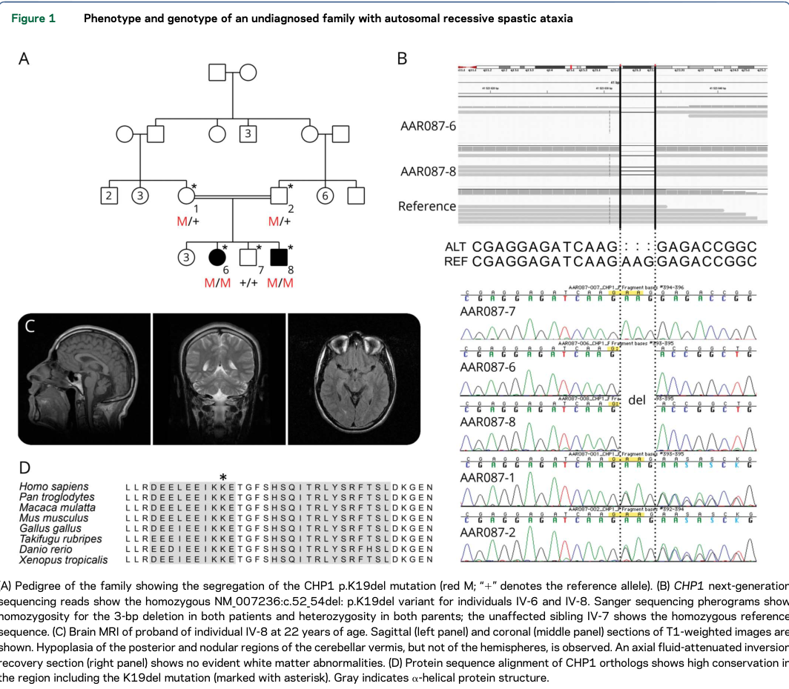

Autosomal recessive spastic ataxia 9 (SPAX9; OMIM 618438; also referred to in the literature as ARCA-CHP1) is an ultra-rare hereditary spastic ataxia caused by biallelic hypomorphic variants in CHP1 (calcineurin-like EF-hand protein 1) at 15q15.1. CHP1 is an obligate binding partner of NHE1, the ubiquitously expressed plasma-membrane Na+/H+ exchanger encoded by SLC9A1, and is required for NHE1 biosynthetic maturation, glycosylation, and delivery to the cell surface. Disease-causing CHP1 alleles do not lie in the EF-hand calcium-binding motifs; instead they destabilize the protein, so that mutant CHP1 fails to assemble into functional complexes, aggregates, and is depleted, which secondarily depletes membrane NHE1 and disturbs local proton homeostasis at neuronal axon terminals. The cerebellar Purkinje cell is the most vulnerable target, and Purkinje-cell axon degeneration precedes cell-body loss in the corresponding mouse model. Only two families have been reported. In the index consanguineous Moroccan family (CHP1 p.Lys19del), two siblings developed spastic ataxia within the first decade with cerebellar vermian hypoplasia, combined upper and lower motor neuron involvement, motor neuropathy, intellectual disability, slow ocular saccades, growth retardation, and premature ovarian insufficiency in the female proband. In a second, autopsied Japanese sibling pair (CHP1 p.Arg91Cys), onset was in middle adult life with cerebellar ataxia, cognitive decline, hearing loss, and areflexia; neuropathology showed severe Purkinje-cell loss with Bergmann gliosis, dorsal-column and dorsal-root-ganglion degeneration, sural-nerve fiber loss, and frontal-cortical neuronal loss, together with reduced CHP1 and NHE1 protein in brain. The residual CHP1 protein retained by the p.Arg91Cys allele is the leading explanation for that family's much later onset. No disease-modifying therapy exists; management is supportive.
Ask a research question about Autosomal Recessive Spastic Ataxia 9. OpenScientist will conduct autonomous deep research using the Disorder Mechanisms Knowledge Base and PubMed literature (typically 10-30 minutes).
Do not include personal health information in your question. Questions and results are cached in your browser's local storage.
Conditions with similar clinical presentations that must be differentiated from Autosomal Recessive Spastic Ataxia 9:
name: Autosomal Recessive Spastic Ataxia 9
creation_date: "2026-08-19T00:00:00Z"
category: Mendelian
disease_term:
preferred_term: spastic ataxia 9, autosomal recessive
term:
id: MONDO:0032753
label: spastic ataxia 9, autosomal recessive
description: >
Autosomal recessive spastic ataxia 9 (SPAX9; OMIM 618438; also referred to in the
literature as ARCA-CHP1) is an ultra-rare hereditary spastic ataxia caused by biallelic
hypomorphic variants in CHP1 (calcineurin-like EF-hand protein 1) at 15q15.1. CHP1 is an
obligate binding partner of NHE1, the ubiquitously expressed plasma-membrane Na+/H+
exchanger encoded by SLC9A1, and is required for NHE1 biosynthetic maturation, glycosylation,
and delivery to the cell surface. Disease-causing CHP1 alleles do not lie in the EF-hand
calcium-binding motifs; instead they destabilize the protein, so that mutant CHP1 fails to
assemble into functional complexes, aggregates, and is depleted, which secondarily depletes
membrane NHE1 and disturbs local proton homeostasis at neuronal axon terminals. The
cerebellar Purkinje cell is the most vulnerable target, and Purkinje-cell axon degeneration
precedes cell-body loss in the corresponding mouse model.
Only two families have been reported. In the index consanguineous Moroccan family
(CHP1 p.Lys19del), two siblings developed spastic ataxia within the first decade with
cerebellar vermian hypoplasia, combined upper and lower motor neuron involvement, motor
neuropathy, intellectual disability, slow ocular saccades, growth retardation, and premature
ovarian insufficiency in the female proband. In a second, autopsied Japanese sibling pair
(CHP1 p.Arg91Cys), onset was in middle adult life with cerebellar ataxia, cognitive decline,
hearing loss, and areflexia; neuropathology showed severe Purkinje-cell loss with Bergmann
gliosis, dorsal-column and dorsal-root-ganglion degeneration, sural-nerve fiber loss, and
frontal-cortical neuronal loss, together with reduced CHP1 and NHE1 protein in brain. The
residual CHP1 protein retained by the p.Arg91Cys allele is the leading explanation for that
family's much later onset. No disease-modifying therapy exists; management is supportive.
classifications:
harrisons_chapter:
- classification_value: NEUROLOGIC
parents:
- Hereditary Ataxia
- Spastic Ataxia
- Autosomal Recessive Cerebellar Ataxia
synonyms:
- SPAX9
- Spastic ataxia 9, autosomal recessive
- ARCA-CHP1
- CHP1-related autosomal recessive cerebellar ataxia
inheritance:
- name: Autosomal recessive inheritance
description: >
SPAX9 segregates as an autosomal recessive trait. Both reported families are consanguineous,
with affected siblings homozygous for a CHP1 variant and unaffected parents heterozygous.
inheritance_term:
preferred_term: Autosomal recessive inheritance
term:
id: HP:0000007
label: Autosomal recessive inheritance
evidence:
- reference: PMID:29379881
reference_title: "Biallelic CHP1 mutation causes human autosomal recessive ataxia by impairing NHE1 function."
supports: SUPPORT
evidence_source: HUMAN_CLINICAL
snippet: "We identified a biallelic 3-bp deletion (p.K19del) in CHP1 that cosegregates with the disease."
explanation: Establishes biallelic (homozygous) segregation of the CHP1 allele with disease in the index consanguineous family.
- reference: PMID:32787936
reference_title: "Novel CHP1 mutation in autosomal-recessive cerebellar ataxia: autopsy features of two siblings."
supports: SUPPORT
evidence_source: HUMAN_CLINICAL
snippet: "Patients 1 and 2 harbor a homozygous mutation and III-5 harbors a heterozygous mutation."
explanation: Confirms recessive segregation in the second family — affected siblings homozygous, an unaffected relative heterozygous.
pathophysiology:
- name: CHP1 Loss of Function
biological_scale: MOLECULAR
role: trigger
description: >
Biallelic hypomorphic variants in CHP1 (15q15.1) reduce the pool of functional
calcineurin-like EF-hand protein 1. Two human alleles are known: an in-frame 3-bp deletion
p.Lys19del in the index family and a missense p.Arg91Cys in the second family. Neither lies
within an EF-hand calcium-binding motif, so the primary defect is protein destabilization
and depletion rather than loss of calcium binding per se. The mouse vacillator allele is a
splice-affecting point mutation that likewise reduces CHP1 protein.
genes:
- preferred_term: CHP1
term:
id: hgnc:17433
label: CHP1
molecular_functions:
- preferred_term: calcium ion binding
term:
id: GO:0005509
label: calcium ion binding
evidence:
- reference: PMID:29379881
reference_title: "Biallelic CHP1 mutation causes human autosomal recessive ataxia by impairing NHE1 function."
supports: SUPPORT
evidence_source: HUMAN_CLINICAL
snippet: "Collectively, our results identified CHP1 as a novel ataxia-causative gene in humans, further expanding the spectrum of ARCA-associated loci, and corroborated the crucial role of NHE1 within the pathogenesis of these disorders."
explanation: Establishes CHP1 as the causative gene and NHE1 as the effector pathway.
- reference: PMID:32787936
reference_title: "Novel CHP1 mutation in autosomal-recessive cerebellar ataxia: autopsy features of two siblings."
supports: SUPPORT
evidence_source: HUMAN_CLINICAL
snippet: "Among them, we focused on a homozygous missense variant, p.Arg91Cys (c.271C > T), in CHP1."
explanation: Identifies the second human disease allele, independently implicating CHP1.
downstream:
- target: Failure of CHP1 Complex Assembly and Protein Aggregation
description: >-
Destabilized CHP1 cannot enter its native complexes and instead aggregates, depleting the
soluble pool.
- name: Failure of CHP1 Complex Assembly and Protein Aggregation
biological_scale: MOLECULAR
description: >
Mutant CHP1 fails to incorporate into functional protein complexes and is prone to
aggregation, so the soluble CHP1 pool falls. In patient brain carrying p.Arg91Cys, CHP1
immunoreactivity was lost from Purkinje cells and frontal cortical neurons and CHP1 protein
was reduced by 80% in cerebellum and 60% in frontal cortex.
biological_processes:
- preferred_term: protein-containing complex assembly
term:
id: GO:0065003
label: protein-containing complex assembly
modifier: DECREASED
evidence:
- reference: PMID:29379881
reference_title: "Biallelic CHP1 mutation causes human autosomal recessive ataxia by impairing NHE1 function."
supports: SUPPORT
evidence_source: IN_VITRO
snippet: "We show that mutant CHP1 fails to integrate into functional protein complexes and is prone to aggregation, thereby leading to diminished levels of soluble CHP1 and reduced membrane targeting of NHE1, a major Na+/H+ exchanger implicated in syndromic ataxia-deafness."
explanation: Directly demonstrates failed complex assembly and aggregation of mutant CHP1 with loss of soluble protein in transfected cells.
- reference: PMID:32787936
reference_title: "Novel CHP1 mutation in autosomal-recessive cerebellar ataxia: autopsy features of two siblings."
supports: SUPPORT
evidence_source: HUMAN_CLINICAL
snippet: "Indeed, immunoblot analysis revealed that expression of CHP1 protein in the patients was reduced in the cerebellum by 80% and in the frontal cortex by 60% relative to the controls."
explanation: Quantifies CHP1 depletion in autopsied human brain carrying the p.Arg91Cys allele.
- reference: PMID:29379881
reference_title: "Biallelic CHP1 mutation causes human autosomal recessive ataxia by impairing NHE1 function."
supports: SUPPORT
evidence_source: IN_VITRO
snippet: "Quantification of total accumulation/aggregation events in N2A cells showed that ∼50% of CHP1-K19del-GFP cells presented aggregates compared with ∼20% in CHP1-WT-GFP cells."
explanation: Quantifies the aggregation phenotype of the mutant protein in a neuronal cell line.
- reference: PMID:29379881
reference_title: "Biallelic CHP1 mutation causes human autosomal recessive ataxia by impairing NHE1 function."
supports: PARTIAL
evidence_source: IN_VITRO
snippet: "the aggregation proneness described for CHP1-K19del should be considered as a readout of abnormal protein folding rather than a disease mechanism itself"
explanation: >-
Important scoping caveat from the discovery authors: aggregation indexes misfolding here
and should not be curated as a proteotoxic disease mechanism in its own right.
notes: >
Aggregates of mutant CHP1 colocalize with ubiquitin and p62, indicating recognition by
neuronal protein quality-control systems. The authors explicitly caution that this
aggregation is a readout of misfolding rather than a proteotoxic disease mechanism, so this
node is modeled as loss of functional soluble CHP1, not as a proteinopathy.
downstream:
- target: Impaired NHE1 Biosynthetic Maturation and Membrane Targeting
description: >-
CHP1 is an obligate NHE1 cofactor; its depletion leaves NHE1 immature and mislocalized.
- name: Impaired NHE1 Biosynthetic Maturation and Membrane Targeting
biological_scale: MOLECULAR
role: central_effector
description: >
CHP1 is an obligate binding partner of the Na+/H+ exchanger NHE1 (SLC9A1) that promotes its
biosynthetic maturation, full glycosylation, cell-surface expression, and pH sensitivity.
With CHP1 depleted, NHE1 fails to mature and its delivery to the plasma membrane — including
to presynaptic axon terminals — falls. Cryo-EM structures of the human NHE1-CHP1 complex show
NHE1 as a symmetrical homodimer with CHP1 associating differentially with the inward- and
outward-facing states, providing the structural basis for CHP1-dependent regulation.
genes:
- preferred_term: SLC9A1
term:
id: hgnc:11071
label: SLC9A1
molecular_functions:
- preferred_term: sodium:proton antiporter activity
term:
id: GO:0015385
label: sodium:proton antiporter activity
modifier: DECREASED
biological_processes:
- preferred_term: protein maturation
term:
id: GO:0051604
label: protein maturation
modifier: DECREASED
- preferred_term: protein N-linked glycosylation
term:
id: GO:0006487
label: protein N-linked glycosylation
modifier: DECREASED
- preferred_term: protein localization to plasma membrane
term:
id: GO:0072659
label: protein localization to plasma membrane
modifier: DECREASED
pdb_structures:
- pdb_id: 7DSW
target_protein: Human NHE1-CHP1 complex
method: cryo-EM
description: Inward-facing human NHE1-CHP1 complex determined at pH 7.5 in sodium.
publication: PMID:34108458
- pdb_id: 7DSX
target_protein: Human NHE1-CHP1 complex
method: cryo-EM
ligand: cariporide
description: Outward-facing human NHE1-CHP1 complex bound to the NHE1 inhibitor cariporide.
publication: PMID:34108458
evidence:
- reference: PMID:34108458
reference_title: "Structure and mechanism of the human NHE1-CHP1 complex."
supports: SUPPORT
evidence_source: IN_VITRO
snippet: "Calcineurin B-homologous protein 1 (CHP1) is an obligate binding partner that promotes NHE1 biosynthetic maturation, cell surface expression and pH-sensitivity."
explanation: Establishes the obligate CHP1-NHE1 relationship and the three NHE1 properties CHP1 supports.
- reference: PMID:23904602
reference_title: "CHP1-mediated NHE1 biosynthetic maturation is required for Purkinje cell axon homeostasis."
supports: SUPPORT
evidence_source: MODEL_ORGANISM
snippet: "We demonstrated that CHP1 assists in the full glycosylation of NHE1 that is necessary for the membrane localization of this transporter and that truncated isoforms of CHP1 were defective in stimulating NHE1 biosynthetic maturation."
explanation: Shows mechanistically that CHP1 drives NHE1 glycosylation and membrane localization and that mutant CHP1 cannot.
- reference: PMID:32787936
reference_title: "Novel CHP1 mutation in autosomal-recessive cerebellar ataxia: autopsy features of two siblings."
supports: SUPPORT
evidence_source: HUMAN_CLINICAL
snippet: "Moreover, we confirmed a severe reduction of NHE1 protein in those tissues"
explanation: Confirms secondary NHE1 depletion in human CHP1-mutant brain tissue, not merely in cell models.
downstream:
- target: Disturbed Axonal Proton Homeostasis
description: >-
Loss of surface NHE1 removes the principal Na+/H+ exchange route regulating local pH at
axon terminals.
- name: Disturbed Axonal Proton Homeostasis
biological_scale: CELLULAR
description: >
NHE1 is the major regulator of intracellular pH and cell volume in most mammalian cells and
is normally concentrated at presynaptic axon terminals. In Chp1-deficient Purkinje cells,
membrane NHE1 at axon terminals is greatly reduced before any axon degeneration is visible,
identifying loss of local proton regulation as an upstream event rather than a consequence
of degeneration.
cell_types:
- preferred_term: cerebellar Purkinje cell
term:
id: CL:0000121
label: Purkinje cell
biological_processes:
- preferred_term: regulation of intracellular pH
term:
id: GO:0051453
label: regulation of intracellular pH
modifier: ABNORMAL
- preferred_term: proton transmembrane transport
term:
id: GO:1902600
label: proton transmembrane transport
modifier: DECREASED
evidence:
- reference: PMID:23904602
reference_title: "CHP1-mediated NHE1 biosynthetic maturation is required for Purkinje cell axon homeostasis."
supports: SUPPORT
evidence_source: MODEL_ORGANISM
snippet: "Consistent with this, membrane localization of NHE1 at axon terminals was greatly reduced in Chp1-deficient Purkinje cells before axon degeneration."
explanation: Places loss of axon-terminal NHE1 temporally upstream of axon degeneration in the Chp1 mutant mouse.
- reference: PMID:23904602
reference_title: "CHP1-mediated NHE1 biosynthetic maturation is required for Purkinje cell axon homeostasis."
supports: SUPPORT
evidence_source: MODEL_ORGANISM
snippet: "Our findings clearly demonstrate that the polarized presynaptic localization of NHE/CHP1 is an important feature of neuronal axons and that selective disruption of NHE1-mediated proton homeostasis in axons can lead to degeneration, suggesting that local regulation of pH is pivotal for axon survival."
explanation: States the authors' mechanistic conclusion that disrupted axonal proton homeostasis causes degeneration.
downstream:
- target: Purkinje Cell Axon Degeneration and Neuronal Loss
description: >-
Failure of local pH regulation in the axon compartment leads first to axonal swelling and
degeneration and then to Purkinje-cell loss.
- name: Purkinje Cell Axon Degeneration and Neuronal Loss
biological_scale: CELLULAR
conforms_to: "cerebellar_purkinje_degeneration#Purkinje Neuron Degeneration"
description: >
Purkinje cells are the selectively vulnerable population. In Chp1-mutant vacillator mice,
ataxia develops with concomitant Purkinje-cell axon degeneration, and genetic ablation of
Nhe1 alone reproduces the same axonal degeneration, establishing functional convergence of
the two proteins. Human neuropathology in the p.Arg91Cys family shows severe Purkinje-cell
loss with Bergmann gliosis, more marked in the hemispheres than the vermis, with reduced
calbindin-D28k immunoreactivity in surviving Purkinje cells while molecular-layer
interneurons are relatively preserved.
cell_types:
- preferred_term: cerebellar Purkinje cell
term:
id: CL:0000121
label: Purkinje cell
- preferred_term: Bergmann glial cell
term:
id: CL:0000644
label: Bergmann glial cell
biological_processes:
- preferred_term: neuron projection maintenance
term:
id: GO:1990535
label: neuron projection maintenance
modifier: DECREASED
locations:
- preferred_term: cerebellar cortex
term:
id: UBERON:0002129
label: cerebellar cortex
evidence:
- reference: PMID:23904602
reference_title: "CHP1-mediated NHE1 biosynthetic maturation is required for Purkinje cell axon homeostasis."
supports: SUPPORT
evidence_source: MODEL_ORGANISM
snippet: "Here we report a chemically induced, recessive mouse mutation, vacillator (vac), which causes ataxia and concomitant axon degeneration of cerebellar Purkinje cells."
explanation: Links Chp1 deficiency directly to Purkinje-cell axon degeneration and ataxia in vivo.
- reference: PMID:23904602
reference_title: "CHP1-mediated NHE1 biosynthetic maturation is required for Purkinje cell axon homeostasis."
supports: SUPPORT
evidence_source: MODEL_ORGANISM
snippet: "Furthermore, genetic ablation of Nhe1 also resulted in Purkinje cell axon degeneration, pinpointing the functional convergence of the two proteins."
explanation: Shows the degeneration is attributable to the NHE1 arm of CHP1 function, not an unrelated CHP1 role.
- reference: PMID:32787936
reference_title: "Novel CHP1 mutation in autosomal-recessive cerebellar ataxia: autopsy features of two siblings."
supports: SUPPORT
evidence_source: HUMAN_CLINICAL
snippet: "Microscopically, severe loss of Purkinje cells with Bergman gliosis, being more prominent in the cerebellar hemisphere than in the vermis, was evident"
explanation: Human autopsy confirmation that Purkinje-cell loss with Bergmann gliosis is the cerebellar lesion.
downstream:
- target: Cerebellar Degeneration and Loss of Cortical Output
description: >-
Purkinje-cell loss removes the sole inhibitory output of the cerebellar cortex.
- target: Sensory Neuronopathy and Dorsal Column Degeneration
description: >-
The same neuronal vulnerability extends to dorsal-root-ganglion sensory neurons and their
central projections.
- target: Peripheral Nerve Axonal Degeneration
description: >-
Motor axons in peripheral nerve show the same axonal vulnerability.
- target: Frontal Cortical Neuronal Loss
description: >-
Frontal cortical neurons also depend on CHP1 and are lost, though far less severely than
Purkinje cells.
- name: Cerebellar Degeneration and Loss of Cortical Output
biological_scale: TISSUE
description: >
Progressive Purkinje-cell loss produces cerebellar atrophy. Imaging in the index family
showed hypoplasia of the posterior and nodular cerebellar vermis with sparing of the
hemispheres, whereas the later-onset family showed diffuse cerebellar atrophy on CT and, at
autopsy, hemispheric atrophy exceeding vermian atrophy — indicating that the topography of
cerebellar involvement differs between the two CHP1 genotypes.
locations:
- preferred_term: cerebellum
term:
id: UBERON:0002037
label: cerebellum
cell_types:
- preferred_term: cerebellar Purkinje cell
term:
id: CL:0000121
label: Purkinje cell
evidence:
- reference: PMID:29379881
reference_title: "Biallelic CHP1 mutation causes human autosomal recessive ataxia by impairing NHE1 function."
supports: SUPPORT
evidence_source: HUMAN_CLINICAL
snippet: "Hypoplasia of the posterior and nodular regions of the cerebellar vermis, but not of the hemispheres, is observed."
explanation: Documents the vermis-predominant cerebellar imaging finding in the p.Lys19del family.
- reference: PMID:32787936
reference_title: "Novel CHP1 mutation in autosomal-recessive cerebellar ataxia: autopsy features of two siblings."
supports: SUPPORT
evidence_source: HUMAN_CLINICAL
snippet: "Atrophy of the cerebellar hemispheres was more severe than that of the vermis"
explanation: Documents the contrasting hemisphere-predominant cerebellar atrophy in the p.Arg91Cys family.
downstream:
- target: Progressive Spastic Ataxia
description: >-
Loss of cerebellar cortical output produces the ataxic component of the phenotype.
- name: Sensory Neuronopathy and Dorsal Column Degeneration
biological_scale: TISSUE
description: >
Autopsy in the p.Arg91Cys family showed severe loss of dorsal-root-ganglion neurons with
Nageotte nodules and macrophage infiltration, and loss of myelinated fibers in the gracile
fasciculus from cervical to lumbar levels, with atrophy of the spinal cord and dorsal roots.
Because the gracile fasciculus carries the central processes of dorsal-root-ganglion
neurons, this is modeled as one lesion — a sensory neuronopathy with secondary central
tract degeneration — rather than as two independent events. It is the substrate of the
impaired vibration sense reported clinically.
cell_types:
- preferred_term: sensory neuron of dorsal root ganglion
term:
id: CL:0000101
label: sensory neuron
locations:
- preferred_term: spinal cord dorsal column
term:
id: UBERON:0005373
label: spinal cord dorsal column
- preferred_term: dorsal root ganglion
term:
id: UBERON:0000044
label: dorsal root ganglion
evidence:
- reference: PMID:32787936
reference_title: "Novel CHP1 mutation in autosomal-recessive cerebellar ataxia: autopsy features of two siblings."
supports: SUPPORT
evidence_source: HUMAN_CLINICAL
snippet: "The gracile fasciculus showed loss of myelinated fibers extending from the cervical to the lumbar level (Fig. 1j), and the dorsal root ganglia showed severe loss of ganglion cells (Fig. 1k)."
explanation: Documents the paired dorsal-root-ganglion and dorsal-column lesion at autopsy.
- reference: PMID:32787936
reference_title: "Novel CHP1 mutation in autosomal-recessive cerebellar ataxia: autopsy features of two siblings."
supports: SUPPORT
evidence_source: HUMAN_CLINICAL
snippet: "The spinal cord and dorsal roots were atrophic"
explanation: Documents the accompanying spinal cord and dorsal root atrophy.
downstream:
- target: Progressive Spastic Ataxia
description: >-
Loss of proprioceptive input adds a sensory component to the gait disorder.
- name: Peripheral Nerve Axonal Degeneration
biological_scale: TISSUE
conforms_to: "peripheral_axonal_degeneration#Distal Axonal Degeneration and Demyelination"
description: >
A motor neuropathy with lower motor neuron involvement was part of the index family's
phenotype, and autopsy in the second family showed severe loss of myelinated fibers in the
sural nerve. Motor axon vulnerability is reproduced in the zebrafish model, where chp1
knockdown truncates caudal primary motor neuron axons and increases terminal branching.
cell_types:
- preferred_term: motor neuron
term:
id: CL:0000100
label: motor neuron
biological_processes:
- preferred_term: myelination
term:
id: GO:0042552
label: myelination
modifier: DECREASED
locations:
- preferred_term: sural nerve
term:
id: UBERON:0015488
label: sural nerve
evidence:
- reference: PMID:32787936
reference_title: "Novel CHP1 mutation in autosomal-recessive cerebellar ataxia: autopsy features of two siblings."
supports: SUPPORT
evidence_source: HUMAN_CLINICAL
snippet: "Severe loss of myelinated fibers in the sural nerve was also evident"
explanation: Documents the peripheral-nerve fiber loss at autopsy.
- reference: PMID:29379881
reference_title: "Biallelic CHP1 mutation causes human autosomal recessive ataxia by impairing NHE1 function."
supports: SUPPORT
evidence_source: HUMAN_CLINICAL
snippet: "2 siblings of a consanguineous family characterized by motor neuropathy, cerebellar atrophy, spastic paraparesis, intellectual disability, and slow ocular saccades"
explanation: Establishes motor neuropathy as a clinical feature of the index family.
downstream:
- target: Progressive Spastic Ataxia
description: >-
Peripheral motor axon loss contributes distal weakness and amyotrophy to the syndrome.
- name: Frontal Cortical Neuronal Loss
biological_scale: TISSUE
description: >
Moderate neuronal loss and gliosis confined to layers II and III of the frontal cortex, with
complete loss of CHP1 immunoreactivity in frontal cortical neurons, while the brainstem and
the remainder of the cerebrum were spared. This is the anatomical correlate of the adult
cognitive decline seen in the p.Arg91Cys family and shows that CHP1 dependence is not
confined to the cerebellum.
cell_types:
- preferred_term: neuron
term:
id: CL:0000540
label: neuron
locations:
- preferred_term: frontal cortex
term:
id: UBERON:0001870
label: frontal cortex
evidence:
- reference: PMID:32787936
reference_title: "Novel CHP1 mutation in autosomal-recessive cerebellar ataxia: autopsy features of two siblings."
supports: SUPPORT
evidence_source: HUMAN_CLINICAL
snippet: "No neuronal loss or focal gliosis was observed in the other regions of the brainstem and cerebrum, except for moderate neuronal loss (Fig. 1g) and gliosis (Fig. 1h) in layers II and III of the frontal cortex."
explanation: Establishes selective frontal-cortical involvement while sparing brainstem and the rest of the cerebrum.
- reference: PMID:32787936
reference_title: "Novel CHP1 mutation in autosomal-recessive cerebellar ataxia: autopsy features of two siblings."
supports: SUPPORT
evidence_source: HUMAN_CLINICAL
snippet: "Based on our observations, the CHP1 insufficiency was presumed to have been linked to neuronal loss in the cerebellar and frontal cortex, which would have been associated with cerebellar ataxia and cognitive decline, respectively."
explanation: States the authors' attribution of cognitive decline to frontal cortical neuronal loss.
downstream:
- target: Progressive Spastic Ataxia
description: >-
Frontal cortical neuron loss contributes the cognitive component of the syndrome.
- name: Progressive Spastic Ataxia
biological_scale: ORGANISM
role: consequence
description: >
The convergence of cerebellar cortical failure, corticospinal-tract involvement, dorsal-column
sensory loss, and motor neuropathy produces the clinical syndrome of progressive spastic
ataxia — gait instability with dysmetria and slow saccades, pyramidal signs (spasticity,
Babinski and Hoffmann signs), and, depending on genotype, intellectual disability from
childhood or later cognitive decline.
evidence:
- reference: PMID:29379881
reference_title: "Biallelic CHP1 mutation causes human autosomal recessive ataxia by impairing NHE1 function."
supports: SUPPORT
evidence_source: HUMAN_CLINICAL
snippet: "Two of 6 siblings of a consanguineous Moroccan family (figure 1A) developed autosomal recessive spastic ataxia with onset during the first decade of life."
explanation: Names the clinical syndrome and its childhood onset in the index family.
phenotypes:
- name: Ataxia
category: Neurological
description: >
Progressive gait and limb ataxia is the cardinal feature in both reported families, with
gait instability as the presenting symptom.
phenotype_term:
preferred_term: Ataxia
term:
id: HP:0001251
label: Ataxia
clinical_course: PROGRESSIVE
frequency: VERY_FREQUENT
evidence:
- reference: PMID:32787936
reference_title: "Novel CHP1 mutation in autosomal-recessive cerebellar ataxia: autopsy features of two siblings."
supports: SUPPORT
evidence_source: HUMAN_CLINICAL
snippet: "Two siblings (patients 1 and 2) developed cerebellar ataxic gait and speech at the ages of 30 and 56 years, respectively, followed by cognitive decline, pyramidal signs, loss of deep tendon reflexes and hearing loss."
explanation: Ataxic gait was the presenting feature in both siblings of the second family.
- reference: PMID:29379881
reference_title: "Biallelic CHP1 mutation causes human autosomal recessive ataxia by impairing NHE1 function."
supports: SUPPORT
evidence_source: HUMAN_CLINICAL
snippet: "They show gait instability with moderate cerebellar atrophy (figure 1B) and upper and lower motor neuron involvement, intellectual disability, growth retardation, slow ocular saccades, and ovarian failure in the female proband."
explanation: >-
Gait instability with cerebellar atrophy in the index family. The VERY_FREQUENT band is a
derived count, not a reported percentage: ataxia is documented in all 4 patients from the
2 reported families (4/4 = 100%, within the 80-100% band). With a denominator of 4 this is
the coarsest defensible band rather than a precise frequency estimate.
- name: Gait ataxia
category: Neurological
description: >
Ataxic gait was the presenting manifestation in every reported patient, in the index family
as first-decade gait instability with frequent falls and in the later-onset family as
cerebellar ataxic gait beginning at ages 30 and 56.
phenotype_term:
preferred_term: Gait ataxia
term:
id: HP:0002066
label: Gait ataxia
evidence:
- reference: PMID:32787936
reference_title: "Novel CHP1 mutation in autosomal-recessive cerebellar ataxia: autopsy features of two siblings."
supports: SUPPORT
evidence_source: HUMAN_CLINICAL
snippet: "Two siblings (patients 1 and 2) developed cerebellar ataxic gait and speech at the ages of 30 and 56 years, respectively"
explanation: Names cerebellar ataxic gait specifically as the presenting feature in the second family.
- reference: PMID:29379881
reference_title: "Biallelic CHP1 mutation causes human autosomal recessive ataxia by impairing NHE1 function."
supports: SUPPORT
evidence_source: HUMAN_CLINICAL
snippet: "They show gait instability with moderate cerebellar atrophy (figure 1B) and upper and lower motor neuron involvement"
explanation: Documents gait instability with cerebellar atrophy in the index family.
- name: Spastic paraparesis
category: Neurological
description: >
Spastic paraparesis with pyramidal signs accompanies the cerebellar ataxia, giving the
disorder its designation as a spastic ataxia rather than a pure cerebellar ataxia. Bound to
the specific HP:0001258 rather than generic Spasticity because the cited source states
"spastic paraparesis".
phenotype_term:
preferred_term: Spastic paraparesis
term:
id: HP:0001258
label: Spastic paraplegia
evidence:
- reference: PMID:29379881
reference_title: "Biallelic CHP1 mutation causes human autosomal recessive ataxia by impairing NHE1 function."
supports: SUPPORT
evidence_source: HUMAN_CLINICAL
snippet: "To ascertain the genetic and functional basis of complex autosomal recessive cerebellar ataxia (ARCA) presented by 2 siblings of a consanguineous family characterized by motor neuropathy, cerebellar atrophy, spastic paraparesis, intellectual disability, and slow ocular saccades."
explanation: Spastic paraparesis is listed among the defining features of the index family.
- name: Babinski sign
category: Neurological
description: An extensor plantar response, present in affected individuals of both families.
phenotype_term:
preferred_term: Babinski sign
term:
id: HP:0003487
label: Babinski sign
notes: >
Tabulated as present in all four reported patients across both families. This finding is recorded only in the published clinical comparison table of PMID:32787936 and in the HPO annotations for OMIM:618438. No sentence-level statement of it exists in either primary report, and the table's cells do not survive text extraction, so no evidence block is attached rather than quoting a fragment that carries no propositional content.
- name: Abnormal pyramidal sign
category: Neurological
description: >
Pyramidal (upper motor neuron) signs are present in every reported patient and are what
make this a spastic rather than a pure cerebellar ataxia. The published clinical comparison
table records Babinski signs in all four patients and Hoffmann sign, and the specific signs
are curated separately; this entry carries the sentence-level evidence for the pyramidal
axis as a whole in both families.
phenotype_term:
preferred_term: Abnormal pyramidal sign
term:
id: HP:0007256
label: Abnormal pyramidal sign
evidence:
- reference: PMID:29379881
reference_title: "Biallelic CHP1 mutation causes human autosomal recessive ataxia by impairing NHE1 function."
supports: SUPPORT
evidence_source: HUMAN_CLINICAL
snippet: "Positive pyramidal and cerebellar signs along with additional clinical features are summarized in table e-3"
explanation: States that pyramidal signs were positive in the index family.
- reference: PMID:32787936
reference_title: "Novel CHP1 mutation in autosomal-recessive cerebellar ataxia: autopsy features of two siblings."
supports: SUPPORT
evidence_source: HUMAN_CLINICAL
snippet: "followed by cognitive decline, pyramidal signs, loss of deep tendon reflexes and hearing loss"
explanation: Documents pyramidal signs in both siblings of the second family.
- name: Dysmetria
category: Neurological
description: Ocular dysmetria and limb dysmetria as cerebellar signs.
phenotype_term:
preferred_term: Dysmetria
term:
id: HP:0001310
label: Dysmetria
notes: >
Ocular dysmetria is tabulated as present in all four reported patients. This finding is recorded only in the published clinical comparison table of PMID:32787936 and in the HPO annotations for OMIM:618438. No sentence-level statement of it exists in either primary report, and the table's cells do not survive text extraction, so no evidence block is attached rather than quoting a fragment that carries no propositional content.
- name: Slow saccadic eye movements
category: Neurological
description: Slow ocular saccades were a distinguishing feature of the index family.
phenotype_term:
preferred_term: Slow saccadic eye movements
term:
id: HP:0000514
label: Slow saccadic eye movements
evidence:
- reference: PMID:29379881
reference_title: "Biallelic CHP1 mutation causes human autosomal recessive ataxia by impairing NHE1 function."
supports: SUPPORT
evidence_source: HUMAN_CLINICAL
snippet: "characterized by motor neuropathy, cerebellar atrophy, spastic paraparesis, intellectual disability, and slow ocular saccades"
explanation: Slow ocular saccades are named among the defining clinical features.
- name: Dysarthria
category: Neurological
description: Cerebellar dysarthria, reported in the later-onset family.
phenotype_term:
preferred_term: Dysarthria
term:
id: HP:0001260
label: Dysarthria
evidence:
- reference: PMID:32787936
reference_title: "Novel CHP1 mutation in autosomal-recessive cerebellar ataxia: autopsy features of two siblings."
supports: SUPPORT
evidence_source: HUMAN_CLINICAL
snippet: "Two siblings (patients 1 and 2) developed cerebellar ataxic gait and speech at the ages of 30 and 56 years, respectively"
explanation: Ataxic (cerebellar) speech at onset in both siblings of the second family.
- name: Intellectual disability
category: Neurological
description: >
Intellectual disability was present in the childhood-onset index family; in the
later-onset family it was absent or mild, with adult cognitive decline instead.
phenotype_term:
preferred_term: Intellectual disability
term:
id: HP:0001249
label: Intellectual disability
evidence:
- reference: PMID:29379881
reference_title: "Biallelic CHP1 mutation causes human autosomal recessive ataxia by impairing NHE1 function."
supports: SUPPORT
evidence_source: HUMAN_CLINICAL
snippet: "upper and lower motor neuron involvement, intellectual disability, growth retardation, slow ocular saccades, and ovarian failure in the female proband"
explanation: Intellectual disability is listed among the features of the index siblings.
- name: Mental deterioration
category: Neurological
description: >
Adult-onset cognitive decline was the most distinctive clinical feature of the
p.Arg91Cys family and correlates with the frontal-cortical neuronal loss found at autopsy.
phenotype_term:
preferred_term: Mental deterioration
term:
id: HP:0001268
label: Mental deterioration
clinical_course: PROGRESSIVE
evidence:
- reference: PMID:32787936
reference_title: "Novel CHP1 mutation in autosomal-recessive cerebellar ataxia: autopsy features of two siblings."
supports: SUPPORT
evidence_source: HUMAN_CLINICAL
snippet: "the most significant clinical feature in the present patients was onset of ataxia in middle age and cognitive decline, in contrast to the infantile-onset ataxia and intellectual disability in the reported patients"
explanation: Cognitive decline is identified as the most significant clinical feature of the later-onset family.
- name: Cerebellar vermis hypoplasia
category: Neurological
description: >
Brain MRI in the index family showed hypoplasia of the posterior and nodular cerebellar
vermis with sparing of the hemispheres. Curated as hypoplasia (developmental
underdevelopment), not atrophy: the imaging report describes hypoplasia, and this
vermis-restricted childhood finding is a distinct claim from the diffuse cerebellar
atrophy, predominantly hemispheric, documented in the later-onset family.
phenotype_term:
preferred_term: Cerebellar vermis hypoplasia
term:
id: HP:0001320
label: Cerebellar vermis hypoplasia
evidence:
- reference: PMID:29379881
reference_title: "Biallelic CHP1 mutation causes human autosomal recessive ataxia by impairing NHE1 function."
supports: SUPPORT
evidence_source: HUMAN_CLINICAL
snippet: "Hypoplasia of the posterior and nodular regions of the cerebellar vermis, but not of the hemispheres, is observed."
explanation: Directly documents the vermis-restricted cerebellar imaging abnormality.
- name: Cerebellar atrophy
category: Neurological
description: >
Diffuse cerebellar atrophy on neuroimaging in the later-onset family, confirmed at autopsy
as atrophy of the folia with thinning of the dentate nucleus.
phenotype_term:
preferred_term: Cerebellar atrophy
term:
id: HP:0001272
label: Cerebellar atrophy
evidence:
- reference: PMID:32787936
reference_title: "Novel CHP1 mutation in autosomal-recessive cerebellar ataxia: autopsy features of two siblings."
supports: SUPPORT
evidence_source: HUMAN_CLINICAL
snippet: "In patients 1 and 2, brain CT images revealed diffuse cerebellar atrophy"
explanation: Documents diffuse cerebellar atrophy on imaging in both siblings.
- name: Peripheral axonal neuropathy
category: Neurological
description: >
A motor neuropathy was part of the index family's phenotype; at autopsy in the second family
there was severe loss of myelinated fibers in the sural nerve with dorsal-root-ganglion
neuron loss, i.e. a sensorimotor axonal neuropathy/ganglionopathy.
phenotype_term:
preferred_term: Peripheral axonal neuropathy
term:
id: HP:0003477
label: Peripheral axonal neuropathy
evidence:
- reference: PMID:29379881
reference_title: "Biallelic CHP1 mutation causes human autosomal recessive ataxia by impairing NHE1 function."
supports: SUPPORT
evidence_source: HUMAN_CLINICAL
snippet: "2 siblings of a consanguineous family characterized by motor neuropathy, cerebellar atrophy, spastic paraparesis, intellectual disability, and slow ocular saccades"
explanation: Motor neuropathy is a defining feature of the index family.
- reference: PMID:32787936
reference_title: "Novel CHP1 mutation in autosomal-recessive cerebellar ataxia: autopsy features of two siblings."
supports: SUPPORT
evidence_source: HUMAN_CLINICAL
snippet: "Severe loss of myelinated fibers in the sural nerve was also evident"
explanation: Provides the pathological substrate of the peripheral neuropathy.
- name: Dorsal column degeneration
category: Neurological
description: >
Degeneration of the gracile fasciculus from cervical to lumbar levels with atrophy of the
spinal cord and dorsal roots, accounting for the impaired vibration sense reported
clinically.
phenotype_term:
preferred_term: Dorsal column degeneration
term:
id: HP:0007006
label: Dorsal column degeneration
evidence:
- reference: PMID:32787936
reference_title: "Novel CHP1 mutation in autosomal-recessive cerebellar ataxia: autopsy features of two siblings."
supports: SUPPORT
evidence_source: HUMAN_CLINICAL
snippet: "The spinal cord and dorsal roots were atrophic (Fig. 1i). The gracile fasciculus showed loss of myelinated fibers extending from the cervical to the lumbar level"
explanation: Directly documents dorsal-column (gracile fasciculus) degeneration at autopsy.
- name: Impaired distal vibration sensation
category: Neurological
description: Loss of vibration sense, the clinical correlate of dorsal-column involvement.
phenotype_term:
preferred_term: Impaired distal vibration sensation
term:
id: HP:0006886
label: Impaired distal vibration sensation
notes: >
Loss of vibration sense is recorded in the published clinical comparison table; no
sentence-level statement of the clinical sign exists in either report, so the evidence
below is the anatomical substrate rather than the bedside finding.
evidence:
- reference: PMID:32787936
reference_title: "Novel CHP1 mutation in autosomal-recessive cerebellar ataxia: autopsy features of two siblings."
supports: PARTIAL
evidence_source: HUMAN_CLINICAL
snippet: "The gracile fasciculus showed loss of myelinated fibers extending from the cervical to the lumbar level (Fig. 1j), and the dorsal root ganglia showed severe loss of ganglion cells (Fig. 1k)."
explanation: >-
Indirect support only. This documents the dorsal-column and dorsal-root-ganglion lesion
that is the anatomical substrate of impaired vibration sense; it does not itself report
the clinical sensory examination, hence PARTIAL.
- name: Hearing impairment
category: Neurological
description: >
Hearing loss was present in both siblings of the later-onset family. NHE1 loss of function
(SLC9A1) independently causes an ataxia-deafness phenotype in humans, providing a
mechanistic rationale for auditory involvement in the CHP1-NHE1 axis.
phenotype_term:
preferred_term: Hearing impairment
term:
id: HP:0000365
label: Hearing impairment
evidence:
- reference: PMID:32787936
reference_title: "Novel CHP1 mutation in autosomal-recessive cerebellar ataxia: autopsy features of two siblings."
supports: SUPPORT
evidence_source: HUMAN_CLINICAL
snippet: "followed by cognitive decline, pyramidal signs, loss of deep tendon reflexes and hearing loss"
explanation: Hearing loss is documented in both siblings of the p.Arg91Cys family.
- name: Hyperreflexia
category: Neurological
description: >
Brisk deep tendon reflexes in the childhood-onset family, part of the pyramidal
(upper motor neuron) component. The later-onset family instead lost deep tendon reflexes,
so hyperreflexia and areflexia are genotype-dependent alternatives in SPAX9 rather than
coexisting features.
phenotype_term:
preferred_term: Hyperreflexia
term:
id: HP:0001347
label: Hyperreflexia
notes: >
The published clinical comparison table records hyporeflexia/areflexia in the two
p.Arg91Cys patients and hyperreflexia in the two p.Lys19del siblings. This finding is recorded only in the published clinical comparison table of PMID:32787936 and in the HPO annotations for OMIM:618438. No sentence-level statement of it exists in either primary report, and the table's cells do not survive text extraction, so no evidence block is attached rather than quoting a fragment that carries no propositional content. The contrasting
areflexia of the later-onset family does have sentence-level support and is curated
separately.
- name: Distal muscle weakness
category: Neurological
description: >
Muscle weakness with lower motor neuron involvement in the childhood-onset family, absent in
the later-onset siblings.
phenotype_term:
preferred_term: Distal muscle weakness
term:
id: HP:0002460
label: Distal muscle weakness
notes: >
The published clinical comparison table records muscle weakness as absent in the two
p.Arg91Cys patients and present in both p.Lys19del siblings.
evidence:
- reference: PMID:29379881
reference_title: "Biallelic CHP1 mutation causes human autosomal recessive ataxia by impairing NHE1 function."
supports: SUPPORT
evidence_source: HUMAN_CLINICAL
snippet: "They show gait instability with moderate cerebellar atrophy (figure 1B) and upper and lower motor neuron involvement"
explanation: Documents the lower motor neuron involvement underlying the weakness in the index family.
- name: Areflexia
category: Neurological
description: >
Loss of deep tendon reflexes in the later-onset family, contrasting with the hyperreflexia
of the childhood-onset family — a genotype-dependent divergence reflecting whether
peripheral-nerve or corticospinal involvement predominates.
phenotype_term:
preferred_term: Areflexia
term:
id: HP:0001284
label: Areflexia
evidence:
- reference: PMID:32787936
reference_title: "Novel CHP1 mutation in autosomal-recessive cerebellar ataxia: autopsy features of two siblings."
supports: SUPPORT
evidence_source: HUMAN_CLINICAL
snippet: "developed cerebellar ataxic gait and speech at the ages of 30 and 56 years, respectively, followed by cognitive decline, pyramidal signs, loss of deep tendon reflexes and hearing loss"
explanation: Documents loss of deep tendon reflexes in the p.Arg91Cys siblings.
- name: Growth delay
category: Growth
description: Growth retardation was reported in the childhood-onset index family.
phenotype_term:
preferred_term: Growth delay
term:
id: HP:0001510
label: Growth delay
evidence:
- reference: PMID:29379881
reference_title: "Biallelic CHP1 mutation causes human autosomal recessive ataxia by impairing NHE1 function."
supports: SUPPORT
evidence_source: HUMAN_CLINICAL
snippet: "intellectual disability, growth retardation, slow ocular saccades, and ovarian failure in the female proband"
explanation: Growth retardation is listed among the index family's features.
- name: Premature ovarian insufficiency
category: Endocrine
description: >
Ovarian failure was observed in the female proband of the index family and is annotated to
OMIM:618438 in the HPO, but its attribution to CHP1 is explicitly contested by the
discovery authors themselves: neither Chp1 vacillator nor Nhe1-depleted female mice were
reported infertile, vacillator uteri and ovaries were unimpaired, and exome sequencing
identified a second homozygous variant in BNC1 (p.G258E) — a germ-cell-restricted gene
essential for oogenesis, with a BNC1 copy-number variant already implicated in spontaneous
premature ovarian failure. This phenotype should therefore be treated as a possible
independent Mendelian co-morbidity in one individual, not as an established SPAX9 feature.
phenotype_term:
preferred_term: Premature ovarian insufficiency
term:
id: HP:0008209
label: Premature ovarian insufficiency
evidence:
- reference: PMID:29379881
reference_title: "Biallelic CHP1 mutation causes human autosomal recessive ataxia by impairing NHE1 function."
supports: SUPPORT
evidence_source: HUMAN_CLINICAL
snippet: "growth retardation, slow ocular saccades, and ovarian failure in the female proband"
explanation: Documents that ovarian failure was observed in the female proband.
- reference: PMID:29379881
reference_title: "Biallelic CHP1 mutation causes human autosomal recessive ataxia by impairing NHE1 function."
supports: REFUTE
evidence_source: HUMAN_CLINICAL
snippet: "We speculated that a CHP1-independent mutation might account for this defect, further clarifying the CHP1 family pathogenic landscape."
explanation: >-
The discovery authors argue against a CHP1 aetiology for the ovarian failure, having found
a second homozygous candidate variant in the oogenesis gene BNC1 in the same proband.
- name: Frontal cortical atrophy
category: Neurological
description: >
Moderate neuronal loss and gliosis restricted to layers II and III of the frontal cortex,
with loss of CHP1 immunoreactivity in frontal cortical neurons — the anatomical correlate of
the cognitive decline.
phenotype_term:
preferred_term: Frontal cortical atrophy
term:
id: HP:0006913
label: Frontal cortical atrophy
evidence:
- reference: PMID:32787936
reference_title: "Novel CHP1 mutation in autosomal-recessive cerebellar ataxia: autopsy features of two siblings."
supports: SUPPORT
evidence_source: HUMAN_CLINICAL
snippet: "except for moderate neuronal loss (Fig. 1g) and gliosis (Fig. 1h) in layers II and III of the frontal cortex"
explanation: Documents the selective frontal-cortical pathology.
genetic:
- name: CHP1
notes: >
CHP1 (calcineurin like EF-hand protein 1) at 15q15.1 encodes an EF-hand calcium-binding
protein that is an obligate cofactor of the Na+/H+ exchanger NHE1. Only two disease-causing
alleles are known, both homozygous in consanguineous families: an in-frame single-codon
deletion (p.Lys19del) and a missense change (p.Arg91Cys). Neither lies within an EF-hand
motif. Focused screening of 319 ARCA and 657 NeurOmics exomes plus GeneMatcher yielded no
further variants, establishing how rare CHP1 disease alleles are.
gene_term:
preferred_term: CHP1
term:
id: hgnc:17433
label: CHP1
relationship_type: CAUSATIVE
variant_origin: GERMLINE
variants:
- name: CHP1 c.52_54del (p.Lys19del)
description: >
Homozygous in-frame 3-bp deletion identified in two affected siblings of a consanguineous
Moroccan family; absent from public databases and affecting a residue highly conserved
across CHP1 orthologs. In cells the mutant protein fails to enter functional complexes,
aggregates, and reduces NHE1 membrane targeting.
type: inframe_deletion
clinical_significance: PATHOGENIC
regulatory_category: LOF
evidence:
- reference: PMID:29379881
reference_title: "Biallelic CHP1 mutation causes human autosomal recessive ataxia by impairing NHE1 function."
supports: SUPPORT
evidence_source: HUMAN_CLINICAL
snippet: "a biallelic 3-bp deletion in CHP1 (NM_007236.4:c.52_54del:p.Lys19del), hereafter defined as K19del, was validated by Sanger sequencing"
explanation: Names the variant at cDNA and protein level and its Sanger confirmation.
- name: CHP1 c.271C>T (p.Arg91Cys)
description: >
Homozygous missense variant in two Japanese siblings with middle-age-onset ataxia and
cognitive decline; absent from public databases, CADD 32.0, classified likely pathogenic
by ACMG criteria. Associated with incomplete (not complete) CHP1 depletion in brain, the
leading explanation for the milder, later-onset phenotype.
type: missense
clinical_significance: LIKELY_PATHOGENIC
regulatory_category: LOF
evidence:
- reference: PMID:32787936
reference_title: "Novel CHP1 mutation in autosomal-recessive cerebellar ataxia: autopsy features of two siblings."
supports: SUPPORT
evidence_source: HUMAN_CLINICAL
snippet: "The variant has not been found in publicly available databases and exhibited the highest CADD score"
explanation: Records the variant's absence from population databases and its top in silico deleteriousness ranking among the segregating candidates.
evidence:
- reference: PMID:29379881
reference_title: "Biallelic CHP1 mutation causes human autosomal recessive ataxia by impairing NHE1 function."
supports: SUPPORT
evidence_source: HUMAN_CLINICAL
snippet: "Neither focused screening for CHP1 variants in 2 cohorts (ARCA: N = 319 and NeurOmics: N = 657) nor interrogating GeneMatcher yielded additional variants, thus revealing the scarcity of CHP1 mutations."
explanation: Quantifies how rare CHP1 disease alleles are among screened ataxia and neuromuscular cohorts.
diagnosis:
- name: Molecular genetic testing
description: >
Diagnosis rests on identifying biallelic CHP1 variants. Both reported families were solved
by whole-exome sequencing; the index family combined whole-genome linkage analysis with
exome sequencing in a consanguineous pedigree. Given the extreme rarity of CHP1 alleles,
SPAX9 is in practice a sequencing diagnosis rather than a clinically recognizable one, and
should be considered in a recessive spastic ataxia with cerebellar atrophy — including the
middle-age-onset ataxia-plus-cognitive-decline presentation.
evidence:
- reference: PMID:29379881
reference_title: "Biallelic CHP1 mutation causes human autosomal recessive ataxia by impairing NHE1 function."
supports: SUPPORT
evidence_source: HUMAN_CLINICAL
snippet: "Combined whole-genome linkage analysis, whole-exome sequencing, and focused screening for identification of potential causative genes were performed."
explanation: Describes the genomic approach that established the diagnosis in the index family.
- reference: PMID:32787936
reference_title: "Novel CHP1 mutation in autosomal-recessive cerebellar ataxia: autopsy features of two siblings."
supports: SUPPORT
evidence_source: HUMAN_CLINICAL
snippet: "When encounting patients with middle-aged-onset ARCA accompanied by cognitive decline, ARCA-CHP1 should be considered."
explanation: States the authors' diagnostic recommendation for the later-onset presentation.
differential_diagnoses:
- name: SLC9A1-related ataxia-deafness (Lichtenstein-Knorr syndrome)
description: >
Biallelic loss-of-function variants in SLC9A1/NHE1 — the direct downstream partner of CHP1 —
cause cerebellar ataxia with sensorineural hearing loss. Mechanistically adjacent and
phenotypically overlapping, but distinguished by the causal gene.
distinguishing_features:
- Biallelic SLC9A1 variants rather than CHP1
- Prominent sensorineural hearing loss as a core rather than variable feature
- name: Other autosomal recessive spastic ataxias
description: >
A large genetically heterogeneous group (e.g. ARSACS/SACS, SPG7, and the recessive
spastic-ataxia spectrum) presenting with combined cerebellar and pyramidal involvement.
SPAX9 is not clinically separable from these without sequencing.
distinguishing_features:
- Distinct causal genes identified on exome/genome sequencing
- name: Autosomal recessive cerebellar ataxias with peripheral neuropathy
description: >
Recessive ataxias in which sensory ganglionopathy or axonal neuropathy accompanies
cerebellar degeneration (e.g. Friedreich ataxia, ataxia with vitamin E deficiency, SANDO).
Selective vitamin/metabolic testing separates the treatable causes.
distinguishing_features:
- Treatable metabolic causes (vitamin E deficiency, coenzyme Q10 deficiency) excluded biochemically
- Frataxin repeat expansion excluded in Friedreich ataxia
prevalence:
- population: Worldwide
measure_type: CASES_IN_LITERATURE
prevalence_class: ULTRA_RARE
notes: >
Ultra-rare. Four patients from two unrelated consanguineous families (Moroccan and Japanese)
had been reported as of 2020. Targeted screening of 319 ARCA and 657 NeurOmics exomes plus a
GeneMatcher query found no further CHP1 cases.
evidence:
- reference: PMID:29379881
reference_title: "Biallelic CHP1 mutation causes human autosomal recessive ataxia by impairing NHE1 function."
supports: SUPPORT
evidence_source: HUMAN_CLINICAL
snippet: "Neither focused screening for CHP1 variants in 2 cohorts (ARCA: N = 319 and NeurOmics: N = 657) nor interrogating GeneMatcher yielded additional variants, thus revealing the scarcity of CHP1 mutations."
explanation: Supports the ultra-rare classification through negative large-cohort screening.
progression:
- phase: Childhood-onset course (p.Lys19del)
age_range: First decade of life
notes: >
Onset within the first decade with gait instability and frequent falls, progressing over
more than 15-25 years of disease duration with intellectual disability, growth retardation,
and hyperreflexia.
evidence:
- reference: PMID:29379881
reference_title: "Biallelic CHP1 mutation causes human autosomal recessive ataxia by impairing NHE1 function."
supports: SUPPORT
evidence_source: HUMAN_CLINICAL
snippet: "developed autosomal recessive spastic ataxia with onset during the first decade of life"
explanation: Establishes first-decade onset in the index family.
- phase: Middle-age-onset course (p.Arg91Cys)
age_range: Third to sixth decade
notes: >
Onset at ages 30 and 56 with cerebellar ataxic gait and speech, followed by cognitive
decline, pyramidal signs, loss of deep tendon reflexes, and hearing loss; disease durations
of 36 and 20 years to death.
evidence:
- reference: PMID:32787936
reference_title: "Novel CHP1 mutation in autosomal-recessive cerebellar ataxia: autopsy features of two siblings."
supports: SUPPORT
evidence_source: HUMAN_CLINICAL
snippet: "Two siblings (patients 1 and 2) developed cerebellar ataxic gait and speech at the ages of 30 and 56 years, respectively, followed by cognitive decline, pyramidal signs, loss of deep tendon reflexes and hearing loss."
explanation: Establishes middle-age onset and the sequence of features in the second family.
histopathology:
- name: Purkinje cell loss with Bergmann gliosis
description: >
Severe Purkinje-cell loss with Bergmann gliosis, more prominent in the cerebellar hemisphere
than the vermis, with reduced calbindin-D28k immunoreactivity in surviving Purkinje cells and
relatively preserved parvalbumin-positive basket and stellate cells. Dentate-nucleus neurons
are shrunken but not lost, and the inferior olivary and pontine nuclei are unremarkable.
evidence:
- reference: PMID:32787936
reference_title: "Novel CHP1 mutation in autosomal-recessive cerebellar ataxia: autopsy features of two siblings."
supports: SUPPORT
evidence_source: HUMAN_CLINICAL
snippet: "Immunoreactivity of calbindin-D28k in the remaining Purkinje cells was decreased (Fig. 1d and Fig. 2j), whereas that of parvalbumin in stellate cells and basket cell was relatively preserved"
explanation: Documents the selective Purkinje-cell involvement with sparing of molecular-layer interneurons.
- name: Loss of CHP1 immunoreactivity in neurons
description: >
CHP1 immunoreactivity, normally present in the membrane and cytoplasm of Purkinje cells,
cortical neurons, and neuropil, was completely lost in patient cerebellar and cerebral
cortex, with a parallel severe reduction of NHE1 protein.
evidence:
- reference: PMID:32787936
reference_title: "Novel CHP1 mutation in autosomal-recessive cerebellar ataxia: autopsy features of two siblings."
supports: SUPPORT
evidence_source: HUMAN_CLINICAL
snippet: "CHP1 immunoreactivity was detected in the membrane and cytoplasm of neurons and the neuropil in controls, but was completely lost in the cerebellar and cerebral cortex of the patients"
explanation: Establishes the tissue-level protein deficiency underlying the disease in human brain.
animal_models:
- name: Vacillator mouse (Chp1vac/vac)
species: Mouse
genotype: Chp1 vacillator (vac) point mutation, homozygous
background: C57BL/6
publication: PMID:23904602
description: >
A chemically induced recessive mouse mutation in Chp1 producing mutant CHP1 isoforms with an
EF-hand substitution or truncation through aberrant splicing, and markedly reduced CHP1
protein. Homozygotes develop ataxia with Purkinje-cell axon degeneration; loss of NHE1 at
axon terminals precedes degeneration.
modeled_mechanisms:
- target: Purkinje Cell Axon Degeneration and Neuronal Loss
relationship: RECAPITULATES
fidelity: HIGH
description: >
The vacillator mouse reproduces the core cellular lesion of SPAX9 — CHP1 depletion causing
Purkinje-cell axon degeneration and ataxia — and was the observation that motivated
screening CHP1 in human recessive ataxia.
limitations: >
The vac allele is a splice-affecting point mutation rather than either human allele
(p.Lys19del, p.Arg91Cys), and the mouse does not model the extracerebellar features
(intellectual disability, ovarian failure, dorsal-column and sural-nerve degeneration)
reported in patients.
readouts:
- name: Purkinje cell axon degeneration
target: Purkinje Cell Axon Degeneration and Neuronal Loss
direction: INCREASED
interpretation: Histological correlate of the Purkinje-cell degeneration node.
evidence:
- reference: PMID:23904602
reference_title: "CHP1-mediated NHE1 biosynthetic maturation is required for Purkinje cell axon homeostasis."
supports: SUPPORT
evidence_source: MODEL_ORGANISM
snippet: "Here we report a chemically induced, recessive mouse mutation, vacillator (vac), which causes ataxia and concomitant axon degeneration of cerebellar Purkinje cells."
explanation: Reports the axon-degeneration measurement in the vacillator mouse.
- name: Axon-terminal NHE1 membrane localization
target: Purkinje Cell Axon Degeneration and Neuronal Loss
direction: DECREASED
interpretation: >
Establishes the mechanistic order — surface NHE1 is lost before the axon degenerates.
evidence:
- reference: PMID:23904602
reference_title: "CHP1-mediated NHE1 biosynthetic maturation is required for Purkinje cell axon homeostasis."
supports: SUPPORT
evidence_source: MODEL_ORGANISM
snippet: "membrane localization of NHE1 at axon terminals was greatly reduced in Chp1-deficient Purkinje cells before axon degeneration"
explanation: Reports the NHE1 mislocalization readout and its timing relative to degeneration.
evidence:
- reference: PMID:23904602
reference_title: "CHP1-mediated NHE1 biosynthetic maturation is required for Purkinje cell axon homeostasis."
supports: SUPPORT
evidence_source: MODEL_ORGANISM
snippet: "By positional cloning, we identified vac as a point mutation in the calcineurin-like EF hand protein 1 (Chp1) gene that resulted in the production of mutant CHP1 isoforms with an amino acid substitution in a functional EF-hand domain or a truncation of this motif by aberrant splicing and significantly reduced protein levels."
explanation: Establishes that the model's lesion is reduced CHP1, matching the human mechanism.
- name: chp1 morpholino-knockdown zebrafish
species: Zebrafish
genotype: chp1 translation-blocking morpholino knockdown (transient)
background: tg(mnx1-GFP)ml2TG and TL/EK wild type
publication: PMID:29379881
description: >
Transient morpholino knockdown of zebrafish chp1, used in the discovery study both to test
whether CHP1 loss is sufficient to produce the human phenotype and — through mRNA
co-injection rescue — to prove that the human p.Lys19del allele is functionally null.
Morphants show caudal primary motor neuron axonal truncation and increased terminal
branching, severe cerebellar hypoplasia, increased spontaneous contractions, and spastic-like
trunk movement. Wild-type but not p.Lys19del human CHP1 mRNA rescues these defects.
modeled_mechanisms:
- target: Cerebellar Degeneration and Loss of Cortical Output
relationship: RECAPITULATES
fidelity: MODERATE
description: >
chp1 knockdown produces severe cerebellar hypoplasia in the majority of morphants, and
the defect is rescued by wild-type but not mutant human CHP1 mRNA — the allele-specific
rescue that established p.Lys19del pathogenicity.
limitations: >
A transient morpholino knockdown in a developing embryo, with the usual off-target and
dose caveats, and it models cerebellar hypoplasia (a developmental deficit) rather than
the progressive post-natal Purkinje-cell degeneration seen in patients and in the mouse.
Rescue was partial and did not reach control levels.
readouts:
- name: Cerebellar hypoplasia in morphants
target: Cerebellar Degeneration and Loss of Cortical Output
direction: INCREASED
interpretation: Developmental cerebellar deficit attributable to chp1 loss.
evidence:
- reference: PMID:29379881
reference_title: "Biallelic CHP1 mutation causes human autosomal recessive ataxia by impairing NHE1 function."
supports: SUPPORT
evidence_source: MODEL_ORGANISM
snippet: "Furthermore, Chp1 reduction led to severe cerebellar hypoplasia in ∼70% of the morphants."
explanation: Quantifies the cerebellar readout in chp1 morphants.
- name: Allele-specific mRNA rescue of cerebellar and axonal defects
target: Cerebellar Degeneration and Loss of Cortical Output
direction: RESTORED
interpretation: >
Wild-type but not p.Lys19del human CHP1 mRNA restores the phenotype, showing the human
allele is functionally deficient rather than merely rare.
evidence:
- reference: PMID:29379881
reference_title: "Biallelic CHP1 mutation causes human autosomal recessive ataxia by impairing NHE1 function."
supports: SUPPORT
evidence_source: MODEL_ORGANISM
snippet: "Coinjection of chp1 MO and CHP1-WT mRNA, but not CHP1-K19del mRNA, ameliorated all neurologic and movement defects associated with Chp1 deficiency"
explanation: Reports the allele-specific rescue readout.
- target: Peripheral Nerve Axonal Degeneration
relationship: PARTIALLY_RECAPITULATES
fidelity: MODERATE
description: >
Motor axon truncation and abnormal terminal branching in morphants model the motor
neuropathy component of the human phenotype.
limitations: >
Zebrafish caudal primary motor neuron defects are a developmental axon-outgrowth
phenotype; they do not model the dorsal-column and dorsal-root-ganglion sensory
degeneration or the sural-nerve fiber loss found at human autopsy.
readouts:
- name: Caudal primary motor neuron axonal defects
target: Peripheral Nerve Axonal Degeneration
direction: INCREASED
interpretation: Motor axon readout corresponding to the human motor neuropathy.
evidence:
- reference: PMID:29379881
reference_title: "Biallelic CHP1 mutation causes human autosomal recessive ataxia by impairing NHE1 function."
supports: SUPPORT
evidence_source: MODEL_ORGANISM
snippet: "In detail, ∼23% of the analyzed CaP-MNs exhibited defects in axonal projection and ∼35% showed increased terminal branching"
explanation: Quantifies the motor axon readouts in chp1 morphants.
evidence:
- reference: PMID:29379881
reference_title: "Biallelic CHP1 mutation causes human autosomal recessive ataxia by impairing NHE1 function."
supports: SUPPORT
evidence_source: MODEL_ORGANISM
snippet: "Chp1 deficiency in zebrafish, resembling the affected individuals, led to movement defects, cerebellar hypoplasia, and motor axon abnormalities, which were ameliorated by coinjection with wild-type, but not mutant, human CHP1 messenger RNA."
explanation: Establishes the zebrafish model as informative for the human phenotype, with allele-specific rescue.
- name: PLS3-overexpressing vacillator mouse (Chp1vac/vac;PLS3tg/tg)
species: Mouse
genotype: Chp1 vacillator homozygous with ubiquitous PLS3 transgene
background: C57BL/6N
publication: PMID:31607845
description: >
A genetic-modifier cross testing whether overexpressing plastin 3 — a direct CHP1
interaction partner and a protective modifier in spinal muscular atrophy — can rescue
CHP1-deficient ataxia. It delays but does not prevent the phenotype, and is included here
as the only mechanism-directed intervention tested in a CHP1 model.
modeled_mechanisms:
- target: Purkinje Cell Axon Degeneration and Neuronal Loss
relationship: RESCUES
fidelity: MODERATE
description: >
PLS3 overexpression ameliorates Purkinje-neuron axon hypertrophy and axonal swellings and
delays ataxia onset, partially rescuing the degeneration node.
limitations: >
The rescue is partial and stage-limited — ataxia is delayed only at an early disease stage
and the phenotype is not prevented. The effect on NHE1 membrane targeting was a
non-significant trend, and no human data exist.
readouts:
- name: Purkinje neuron axonal swellings
target: Purkinje Cell Axon Degeneration and Neuronal Loss
direction: DECREASED
interpretation: Structural readout of partial rescue of the degeneration node.
evidence:
- reference: PMID:31607845
reference_title: "PLS3 Overexpression Delays Ataxia in Chp1 Mutant Mice."
supports: SUPPORT
evidence_source: MODEL_ORGANISM
snippet: "Furthermore, we demonstrated that PLS3 OE ameliorates axon hypertrophy and axonal swellings in Purkinje neurons thereby slowing down neurodegeneration."
explanation: Reports the axonal-morphology readout underlying the rescue claim.
evidence:
- reference: PMID:31607845
reference_title: "PLS3 Overexpression Delays Ataxia in Chp1 Mutant Mice."
supports: PARTIAL
evidence_source: MODEL_ORGANISM
snippet: "Here, we show that PLS3 overexpression (OE) delays the ataxic phenotype of the vacillator mice at an early but not later disease stage."
explanation: Supports a partial, stage-limited rescue rather than a full one.
treatments:
- name: Physiotherapy and gait rehabilitation
description: >
No disease-modifying therapy exists for SPAX9. First-line supportive management is the
standard rehabilitative care of progressive hereditary spastic ataxia: physiotherapy with
gait and balance training, stretching and strengthening, fall prevention, orthoses, and
mobility aids, alongside conventional spasticity management. This entry records no efficacy
evidence because none has been published for this disorder.
therapeutic_modality: BEHAVIORAL
treatment_term:
preferred_term: physical therapy
term:
id: NCIT:C15302
label: Physical Therapy
- name: Speech and swallowing therapy
description: >
Speech-language therapy for the cerebellar dysarthria documented in both families, with
swallowing assessment as the disease progresses. Recorded as its own entry so the
intervention is queryable rather than buried in a generic supportive-care description; no
SPAX9-specific efficacy evidence has been published.
therapeutic_modality: BEHAVIORAL
treatment_term:
preferred_term: speech and language therapy
term:
id: NCIT:C159273
label: Speech Language Therapy
- name: Occupational therapy and assistive devices
description: >
Occupational therapy for activities of daily living, adaptive equipment, and accessibility
as ambulation declines. Audiological assessment and hearing aids are indicated where the
hearing loss seen in the later-onset family is present. No SPAX9-specific efficacy evidence
has been published.
therapeutic_modality: BEHAVIORAL
treatment_term:
preferred_term: occupational therapy
term:
id: NCIT:C121351
label: Occupational Therapy
- name: Genetic counseling
description: >
Both reported families are consanguineous with a 25% sibling recurrence risk. Counseling
covers recurrence risk, carrier testing of relatives, and the very broad phenotypic range
already evident between the two known genotypes (first-decade onset with intellectual
disability versus middle-age onset with cognitive decline).
therapeutic_modality: BEHAVIORAL
treatment_term:
preferred_term: genetic counseling
term:
id: NCIT:C15240
label: Genetic Counseling
- name: PLS3 overexpression (preclinical genetic modifier)
description: >
Not a clinical therapy. Overexpression of plastin 3, a direct CHP1 interaction partner and
established protective modifier in spinal muscular atrophy, delays ataxia and reduces
Purkinje axonal pathology in Chp1 mutant mice. It is recorded as the only mechanism-directed
intervention tested against CHP1 deficiency, with the caveat that the rescue is partial,
stage-limited, and entirely preclinical.
therapeutic_modality: GENE_THERAPY
treatment_term:
preferred_term: gene therapy
term:
id: NCIT:C15238
label: Gene Therapy
target_mechanisms:
- target: Purkinje Cell Axon Degeneration and Neuronal Loss
treatment_effect: INHIBITS
description: >
PLS3 overexpression slows Purkinje-neuron axonal degeneration in the Chp1 mutant mouse.
evidence:
- reference: PMID:31607845
reference_title: "PLS3 Overexpression Delays Ataxia in Chp1 Mutant Mice."
supports: PARTIAL
evidence_source: MODEL_ORGANISM
snippet: "Furthermore, we demonstrated that PLS3 OE ameliorates axon hypertrophy and axonal swellings in Purkinje neurons thereby slowing down neurodegeneration."
explanation: Supports a partial slowing of the targeted degeneration mechanism in a mouse model only.
evidence:
- reference: PMID:31607845
reference_title: "PLS3 Overexpression Delays Ataxia in Chp1 Mutant Mice."
supports: PARTIAL
evidence_source: MODEL_ORGANISM
snippet: "This data supports the hypothesis that PLS3 is a cross-disease genetic modifier for CHP1-causing ataxia and spinal muscular atrophy."
explanation: The authors themselves frame this as modifier evidence, not therapy.
discussions:
- discussion_id: chp1_calcium_vs_stability
kind: KNOWLEDGE_GAP
prompt: >
Do the human CHP1 disease alleles act purely by destabilizing the protein, or do they also
perturb the calcium-dependent CHP1-NHE1 interaction?
rationale: >
Neither p.Lys19del nor p.Arg91Cys lies in an EF-hand calcium-binding motif, which argues
against a direct effect on calcium-dependent binding — but this reasoning is inferential.
Biophysical work shows that calcium modulates CHP1 conformation and its interaction with the
NHE1 CHP-binding domain, so a calcium-independent destabilization mechanism cannot be
assumed without measuring the mutant proteins directly. Which mechanism applies matters for
whether pharmacological chaperones or calcium-pathway modulation could be relevant.
attaches_to:
- "pathophysiology#Failure of CHP1 Complex Assembly and Protein Aggregation"
proposed_experiments:
- experiment_id: chp1_mutant_binding_biophysics
name: Direct biophysical characterization of mutant CHP1-NHE1 binding
description: >
Measure calcium-dependent conformational change and CHP-binding-domain affinity for
recombinant CHP1 p.Lys19del and p.Arg91Cys by isothermal titration calorimetry and
fluorescent-probe hydrophobicity assay, alongside wild-type CHP1, to separate a
stability defect from a binding defect.
evidence:
- reference: PMID:32787936
reference_title: "Novel CHP1 mutation in autosomal-recessive cerebellar ataxia: autopsy features of two siblings."
supports: SUPPORT
evidence_source: HUMAN_CLINICAL
snippet: "a direct role of these variants in the calcium-dependent interaction between CHP1 and NHE1 would appear to be unlikely"
explanation: States the inferential argument against a calcium-binding mechanism, which is exactly the untested assumption.
- discussion_id: chp1_dose_severity
kind: KNOWLEDGE_GAP
prompt: >
What explains the ~30-year difference in age at onset between the two reported CHP1
genotypes, and does residual CHP1 protein level predict severity?
rationale: >
p.Lys19del causes near-complete loss of CHP1 in cell models and first-decade onset with
intellectual disability; p.Arg91Cys leaves residual protein in brain and produced
middle-age onset with cognitive decline instead. A dose-severity relationship is the
obvious hypothesis but rests on two families studied by different methods in different
tissues, so it is a plausible correlation rather than an established genotype-phenotype rule.
attaches_to:
- "pathophysiology#Failure of CHP1 Complex Assembly and Protein Aggregation"
proposed_experiments:
- experiment_id: chp1_allelic_series
name: Allelic series of CHP1 hypomorphs with matched CHP1 quantification
description: >
Generate an allelic series of CHP1 hypomorphic knock-in models (including both human
alleles) and relate quantified residual CHP1 and surface NHE1 to onset and rate of
Purkinje-cell loss under identical assay conditions.
evidence:
- reference: PMID:32787936
reference_title: "Novel CHP1 mutation in autosomal-recessive cerebellar ataxia: autopsy features of two siblings."
supports: SUPPORT
evidence_source: HUMAN_CLINICAL
snippet: "This remaining protein expression could have resulted in the milder phenotype."
explanation: States the residual-protein hypothesis explicitly as speculation, which is what makes it a gap.
- discussion_id: chp1_model_extracerebellar_fidelity
kind: HUMAN_MODEL_MISMATCH
prompt: >
Do the Chp1 mouse and chp1 zebrafish models capture the extracerebellar human phenotype of
SPAX9?
rationale: >
Both models were validated on cerebellar and motor-axon endpoints: the vacillator mouse on
Purkinje-cell axon degeneration and ataxia, the zebrafish morphant on movement defects,
cerebellar hypoplasia, and motor axon abnormalities. Neither has been shown to reproduce the
intellectual disability, frontal-cortical neuronal loss, dorsal-root-ganglion and
dorsal-column degeneration, growth retardation, or premature ovarian insufficiency seen in
patients. Mechanistic inferences drawn from these models therefore apply confidently only to
the Purkinje-cell arm of the disease.
attaches_to:
- "pathophysiology#Sensory Neuronopathy and Dorsal Column Degeneration"
- "pathophysiology#Peripheral Nerve Axonal Degeneration"
proposed_experiments:
- experiment_id: chp1_extracerebellar_phenotyping
name: Extracerebellar phenotyping of a CHP1 knock-in model
description: >
Phenotype a CHP1 knock-in mouse for dorsal-root-ganglion and dorsal-column integrity,
sural-nerve fiber counts, frontal-cortical neuron number, cognitive performance, growth,
and ovarian reserve, to test whether the non-cerebellar human features are model-tractable.
evidence:
- reference: PMID:29379881
reference_title: "Biallelic CHP1 mutation causes human autosomal recessive ataxia by impairing NHE1 function."
supports: PARTIAL
evidence_source: MODEL_ORGANISM
snippet: "Chp1 deficiency in zebrafish, resembling the affected individuals, led to movement defects, cerebellar hypoplasia, and motor axon abnormalities, which were ameliorated by coinjection with wild-type, but not mutant, human CHP1 messenger RNA."
explanation: Lists the model endpoints actually validated — all motor/cerebellar, none extracerebellar.
references:
- reference: PMID:29379881
title: "Biallelic CHP1 mutation causes human autosomal recessive ataxia by impairing NHE1 function."
- reference: PMID:32787936
title: "Novel CHP1 mutation in autosomal-recessive cerebellar ataxia: autopsy features of two siblings."
- reference: PMID:23904602
title: "CHP1-mediated NHE1 biosynthetic maturation is required for Purkinje cell axon homeostasis."
- reference: PMID:34108458
title: "Structure and mechanism of the human NHE1-CHP1 complex."
- reference: PMID:31607845
title: "PLS3 Overexpression Delays Ataxia in Chp1 Mutant Mice."
notes: >
No GeneReviews chapter exists for SPAX9 / CHP1-related ataxia (PubMed search for
"CHP1 GeneReviews" and "spastic ataxia 9 GeneReviews" returned no results on 2026-08-19),
so no GeneReviews phenotype baseline was available for this entry. Phenotype coverage was
instead cross-checked against the HPO annotations for OMIM:618438 and against the clinical
comparison table of the two reported families.
Evidence cutoff: searches emphasized literature through 2024. Critical limitation: SPAX9 is exceptionally rare. The disease-specific human evidence retrieved consists of one 2018 report describing two affected siblings from one family. Consequently, phenotype frequencies such as “2/2” are descriptive of that family—not population estimates—and most natural-history, epidemiologic, and treatment fields remain unknown. No additional 2023–2024 SPAX9 clinical series or disease-specific trial was identified.
The following table provides a knowledge-base-oriented synopsis; ontology mappings marked “suggested” are annotations rather than assertions made by the source authors.
| Domain | Summary | Ontology / Identifier Suggestions | Evidence |
|---|---|---|---|
| Identity / OMIM | Autosomal recessive spastic ataxia 9 (SPAX9); Mendelian, neurogenetic complex spastic ataxia. OMIM #618438. Do not infer MONDO/Orphanet/ICD identifiers from current evidence; unknown/not confirmed here. | OMIM: 618438; disease label: SPAX9; MONDO/Orphanet/ICD: unknown/not established in retrieved evidence | (mendozaferreira2018biallelicchp1mutation pages 1-2, mendozaferreira2018biallelicchp1mutation pages 2-4) |
| Causal gene and variant | Causal gene: CHP1 (calcineurin-like EF-hand protein 1). Founding human family carried homozygous NM_007236.4:c.52_54del, p.Lys19del (p.K19del). Variant segregated with disease in a consanguineous Moroccan pedigree; absent from public databases in the discovery study. | Gene: CHP1; variant class: in-frame 3-bp deletion; inheritance origin: germline | (mendozaferreira2018biallelicchp1mutation pages 2-4, mendozaferreira2018biallelicchp1mutation media 9ad7cc66) |
| Inheritance | Autosomal recessive; disease established in one consanguineous family with affected homozygous siblings and heterozygous parents. | Inheritance: AR | (mendozaferreira2018biallelicchp1mutation pages 1-2, mendozaferreira2018biallelicchp1mutation pages 2-4, mendozaferreira2018biallelicchp1mutation media 9ad7cc66) |
| Human evidence size | Extremely limited evidence base: 2 affected siblings in the index report; no additional pathogenic CHP1 variants found in screening cohorts (ARCA n=319; NeurOmics n=657), supporting rarity. | Evidence status: ultra-rare / sparse human evidence | (mendozaferreira2018biallelicchp1mutation pages 1-2, mendozaferreira2018biallelicchp1mutation pages 2-4) |
| Onset / course | Onset during the first decade of life; chronic progressive neurodegenerative course with gait instability, spastic ataxia, and cerebellar involvement. | HPO (inferred): Childhood onset HP:0011463; Progressive neurologic deterioration HP:0002344 | (mendozaferreira2018biallelicchp1mutation pages 2-4) |
| Core phenotypes | Core reported phenotype: gait instability / ataxia, spastic paraparesis, upper and lower motor neuron involvement, motor neuropathy, slow ocular saccades, intellectual disability, growth retardation; ovarian failure reported in the female proband, but likely not clearly attributable to CHP1 alone. | HPO (inferred): Ataxia HP:0001251; Spastic paraplegia / paraparesis HP:0001258 or HP:0002313; Peripheral neuropathy HP:0009830; Abnormal pyramidal signs HP:0002493; Slow saccadic eye movements HP:0001276; Intellectual disability HP:0001249; Short stature / growth delay HP:0004322; Primary ovarian insufficiency HP:0008209 (uncertain disease attribution) | (mendozaferreira2018biallelicchp1mutation pages 2-4, mendozaferreira2018biallelicchp1mutation pages 1-2, mendozaferreira2018biallelicchp1mutation pages 8-10) |
| MRI / anatomy | Brain MRI in one affected individual showed moderate cerebellar atrophy with hypoplasia of posterior and nodular regions of the cerebellar vermis, while cerebellar hemispheres were not hypoplastic; no evident white-matter abnormalities on the cited axial FLAIR image. | UBERON (inferred): cerebellum UBERON:0002037; cerebellar vermis UBERON:0002245; nervous system: UBERON:0001016 | (mendozaferreira2018biallelicchp1mutation pages 2-4, mendozaferreira2018biallelicchp1mutation media 9ad7cc66) |
| Molecular causal chain | Upstream: biallelic CHP1 p.Lys19del → reduced soluble CHP1, increased insoluble fraction, aggregation propensity, abnormal higher-molecular-weight complexes. Intermediate: impaired CHP1 support of NHE1/SLC9A1 maturation and membrane targeting. Downstream: reduced NHE1 membrane localization/function → disturbed intracellular pH/ion homeostasis → Purkinje-neuron and motor-system dysfunction → spastic ataxia phenotype. | GO (inferred): protein folding GO:0006457; protein complex assembly GO:0065003; protein localization to plasma membrane GO:1903076; sodium:hydrogen antiporter activity / regulation GO:0015385-related; intracellular pH reduction/homeostasis GO:0051453 / GO:0055078; neuron degeneration GO:0070997 | (mendozaferreira2018biallelicchp1mutation pages 1-2, mendozaferreira2018biallelicchp1mutation pages 2-2, mendozaferreira2018biallelicchp1mutation pages 4-5, mendozaferreira2018biallelicchp1mutation pages 5-8, mendozaferreira2018biallelicchp1mutation pages 8-10) |
| Affected cell types | Human phenotype and model data implicate Purkinje neurons and motor neurons / motor axons as key vulnerable populations; additional CNS regions may be sensitive to NHE1 depletion in animal models. | CL (inferred): Purkinje cell CL:0000121; motor neuron CL:0000100; broader: neuron CL:0000540 | (mendozaferreira2018biallelicchp1mutation pages 8-10, janzen2019pls3overexpressiondelays pages 5-7) |
| Diagnostic strategy | Recommended current approach: clinical recognition of childhood-onset progressive spastic ataxia plus MRI evidence of cerebellar involvement, followed by exome/genome sequencing or ataxia/spastic paraplegia gene panel including CHP1; confirm by segregation testing. No disease-specific biomarker is established. | Testing modalities: WES/WGS/panel sequencing; family segregation; MRI. Biomarker status: unknown/not established | (mendozaferreira2018biallelicchp1mutation pages 1-2, mendozaferreira2018biallelicchp1mutation pages 2-4) |
| Epidemiology | No prevalence or incidence estimates identified in retrieved evidence. Present evidence supports an ultra-rare disorder. Geographic signal from current human data: one consanguineous Moroccan family. | Epidemiology: unknown; founder effect: not established; sex ratio: unknown | (mendozaferreira2018biallelicchp1mutation pages 1-2, mendozaferreira2018biallelicchp1mutation pages 2-4) |
| Treatment / status | No SPAX9-specific approved disease-modifying therapy and no relevant registered clinical trial found in retrieved evidence. Current real-world management is expected to be supportive/multidisciplinary (rehabilitation, spasticity and mobility management, genetic counseling). PLS3 overexpression is a preclinical modifier only, not a human therapy. | NCIT (inferred supportive care): Physical Therapy C15329; Occupational Therapy C15231; Genetic Counseling C15709; disease-modifying therapy: none established | (janzen2019pls3overexpressiondelays pages 5-7, janzen2019pls3overexpressiondelays pages 1-2, janzen2019pls3overexpressiondelays pages 7-9) |
| Model organisms | Zebrafish: chp1 morphants show motor-axon defects, cerebellar hypoplasia, increased spontaneous contractions, and spastic-like trunk movements; rescued by WT but not mutant human CHP1 mRNA. Mouse: Chp1 vacillator mutants develop early balance deficits, progressive ataxic gait, Purkinje axon hypertrophy/swellings, later Purkinje-cell loss; PLS3 overexpression delays early but not late phenotype and trends toward improved NHE1 membrane localization. | Species/models: Danio rerio chp1 knockdown; Mus musculus Chp1 vacillator; evidence class: in vivo functional / modifier | (mendozaferreira2018biallelicchp1mutation pages 8-10, janzen2019pls3overexpressiondelays pages 5-7, janzen2019pls3overexpressiondelays pages 4-5) |
Table: This table condenses the currently retrievable evidence for autosomal recessive spastic ataxia 9, emphasizing the very small human evidence base, the CHP1→NHE1 mechanistic model, and practical knowledge-base fields with clearly marked inferred ontologies and unknowns.
Autosomal recessive spastic ataxia 9 is a childhood-onset, complex hereditary spastic ataxia caused by biallelic pathogenic variation in CHP1, encoding calcineurin-like EF-hand protein 1. Its defining combination is cerebellar ataxia/atrophy, pyramidal involvement with spastic paraparesis, motor neuropathy, slow saccades, and neurodevelopmental impairment. It is a Mendelian neurogenetic disease rather than an acquired ataxia. The original investigators described it as “autosomal recessive spastic ataxia” and established CHP1 as an ataxia-causative gene. (mendozaferreira2018biallelicchp1mutation pages 1-2, mendozaferreira2018biallelicchp1mutation pages 2-4)
The evidence is primarily individual-patient/family-level research data, subsequently represented in aggregated disease resources such as OMIM. It is not an EHR-derived population cohort.
The demonstrated cause is a germline, homozygous, in-frame three-base deletion in CHP1, transcript NM_007236.4:c.52_54del, protein p.Lys19del (p.K19del). It cosegregated with disease in two affected siblings; both consanguineous parents were heterozygous and an unaffected sibling carried the reference genotype. The variant was absent from the public population databases examined in 2018 and alters a highly conserved residue. (mendozaferreira2018biallelicchp1mutation media 9ad7cc66, mendozaferreira2018biallelicchp1mutation pages 2-4)
No human protective allele, diet, exercise exposure, toxin avoidance strategy, or gene–environment interaction has been established. PLS3 overexpression delayed early disease in Chp1-mutant mice, making PLS3 a candidate genetic modifier, but this has not been demonstrated in affected humans. (janzen2019pls3overexpressiondelays pages 5-7, janzen2019pls3overexpressiondelays pages 7-9)
The female proband’s ovarian failure should not automatically be considered part of SPAX9: the investigators found an additional homozygous BNC1 p.Gly258Glu candidate and noted normal reproductive anatomy in Chp1-mutant mice, supporting possible independent etiology. (mendozaferreira2018biallelicchp1mutation pages 4-5)
Because only two affected siblings are documented, precise population frequencies and variability cannot be estimated.
The likely quality-of-life burden includes impaired ambulation, balance, education/cognition, independence, and participation. No SPAX9-specific EQ-5D, SF-36, PROMIS, SARA, or activities-of-daily-living dataset exists. Contemporary ataxia experts regard speech and other digital-motor measures as useful cross-stage endpoints, but that is general ataxia guidance, not SPAX9 validation.
The study screened 319 ARCA cases plus 657 NeurOmics participants (976 total) and found no additional qualifying CHP1 variant; GeneMatcher also yielded none. This demonstrates extreme rarity, although it does not provide prevalence. (mendozaferreira2018biallelicchp1mutation pages 2-4)
Relative to wild-type CHP1, p.Lys19del produced approximately 62% less protein in the soluble fraction and 68% more in the insoluble fraction in transfected cells. About 50% of mutant-expressing N2A cells contained aggregates versus approximately 20% of wild-type-expressing cells; large aggregates occurred in approximately 22% versus 4%, respectively. Mutant aggregates colocalized with ubiquitin and p62. The authors interpreted aggregation mainly as a readout of abnormal folding—not necessarily the primary toxic mechanism. (mendozaferreira2018biallelicchp1mutation pages 4-5, mendozaferreira2018biallelicchp1mutation pages 5-8, mendozaferreira2018biallelicchp1mutation pages 8-10)
No validated human modifier gene, disease-specific methylation signature, chromatin abnormality, structural variant, aneuploidy, or somatic mechanism is known. PLS3 is a preclinical candidate modifier only.
No toxin, radiation, pollution, occupation, smoking, alcohol, diet, exercise pattern, or infectious organism causes or triggers SPAX9. These factors may affect general health and disability but are not established etiologic modifiers. The disease is noninfectious and noncommunicable; zoonotic and pathogen-trigger concepts are not applicable.
Suggested GO biological-process/function terms: protein folding (GO:0006457), protein-complex assembly (GO:0065003), protein localization to plasma membrane, intracellular pH homeostasis (GO:0030641/related ontology term), sodium:proton antiporter activity (GO:0015385), axon degeneration (GO:0061564), and neuron death (GO:0070997). Exact term versions should be ontology-validated.
Suggested cell types: Purkinje cell CL:0000121, motor neuron CL:0000100, and neuron CL:0000540. Compartments: plasma membrane (GO:0005886), cytosol (GO:0005829), axon (GO:0030424), and protein-containing complex (GO:0032991).
No SPAX9 patient-derived transcriptomic, proteomic, metabolomic, lipidomic, single-cell, spatial-transcriptomic, organoid, multi-omic, CRISPR-screen, or disease-specific epigenomic dataset was identified. A 2023 study clarified epigenetic regulation of PLS3, but it was not a SPAX9 patient study and does not establish an SPAX9 epigenetic mechanism. (strathmann2023epigeneticregulationof pages 1-7)
The pedigree, variant segregation, residue conservation, and selective vermian MRI abnormality are directly visualized in the discovery report’s Figure 1. (mendozaferreira2018biallelicchp1mutation media 9ad7cc66)
Onset occurred in the first decade, apparently insidiously rather than acutely. Available human observations support a chronic, lifelong, progressive course, but no formal stages or annual progression rate exist. A practical—not validated—staging concept is: early gait imbalance; intermediate combined ataxia/spasticity with neuropathy; and advanced mobility dependence. There is no documented spontaneous remission, relapsing-remitting behavior, or treatment-induced remission. (mendozaferreira2018biallelicchp1mutation pages 2-4)
Animal evidence suggests an early therapeutic window before irreversible Purkinje-cell death: vacillator mice have balance abnormalities by three weeks, progressive gait ataxia from approximately six weeks, and marked Purkinje loss by four months. PLS3 helped at three to four weeks but not at six weeks, supporting early axonal dysfunction as a potentially more modifiable phase. This remains a model-based inference, not a human critical period. (janzen2019pls3overexpressiondelays pages 5-7, janzen2019pls3overexpressiondelays pages 4-5)
Inheritance is autosomal recessive. For two heterozygous carrier parents, each conception has the standard Mendelian probabilities of 25% affected, 50% carrier, and 25% unaffected/noncarrier, assuming full penetrance of the familial pathogenic genotype. Penetrance cannot be independently estimated from one family; the observed homozygotes were affected. Expressivity, anticipation, and germline mosaicism are unknown. Anticipation is not expected for an in-frame deletion disorder but has not been formally studied.
The index family was consanguineous and Moroccan. This demonstrates neither a Moroccan founder allele nor elevated regional prevalence. There are no prevalence, incidence, carrier-frequency, sex-ratio, or geographic-distribution estimates. The negative screen of 976 additional individuals supports extreme rarity. (mendozaferreira2018biallelicchp1mutation pages 1-2, mendozaferreira2018biallelicchp1mutation pages 2-4)
Suspect SPAX9 in childhood-onset complex spastic ataxia combining cerebellar signs, spastic paraparesis/pyramidal signs, motor neuropathy, slow saccades, intellectual disability, and cerebellar vermian atrophy. Recommended evaluations, extrapolated from hereditary ataxia practice, include neurologic examination, developmental/cognitive assessment, brain MRI, nerve-conduction studies/EMG, ophthalmologic examination, mobility and swallowing/speech evaluation, and endocrine assessment only when clinically indicated.
There is no validated blood, CSF, enzyme, metabolite, proteomic, or pharmacodynamic biomarker. MRI is supportive but not specific. Biopsy is not routinely indicated.
The discovery used linkage plus WES and Sanger segregation. The abstract states: “We identified a biallelic 3-bp deletion (p.K19del) in CHP1 that cosegregates with the disease.” (mendozaferreira2018biallelicchp1mutation pages 1-2)
Important alternatives include other recessive spastic ataxias and complicated HSPs; SLC9A1-related Lichtenstein–Knorr syndrome is mechanistically close but classically includes sensorineural deafness. Other differentials include NKX6-2-, KIF1C-, MAG-, CAPN1-, PNPLA6-, KIAA0415/SPG48-, CYP2U1-, and mitochondrial/repeat-expansion ataxias. Absence of deafness or epilepsy in the reported CHP1 family may reflect residual NHE1 function but is not a definitive discriminator. (mendozaferreira2018biallelicchp1mutation pages 2-2, mendozaferreira2018biallelicchp1mutation pages 8-10)
No population or newborn-screening program exists. Cascade testing of relatives is appropriate after a molecular diagnosis.
No survival curve, mortality rate, life-expectancy estimate, hospitalization rate, or validated quality-of-life measure exists. The known morbidity is progressive neurologic disability affecting gait, balance, cognition, and motor function. Recovery of lost neurons is not demonstrated; rehabilitation may preserve safety, conditioning, and function but is not known to alter neurodegeneration.
Potential complications—based on the phenotype and general neurologic care, not measured SPAX9 rates—include falls, contractures, loss of ambulation, scoliosis, pain, dysarthria/dysphagia, and caregiver burden. No prognostic biomarker or genotype–phenotype model exists. Earlier onset, severe motor neuropathy, and extent of cerebellar involvement are plausible clinical indicators but are unvalidated.
No approved disease-modifying, gene, cell, RNA, editing, targeted, immunologic, or surgical therapy exists for SPAX9, and no relevant SPAX9-specific ClinicalTrials.gov study was found.
Current care is supportive and individualized:
Suggested NCIT annotations include Physical Therapy (C15329), Occupational Therapy (C15231), Speech Therapy, Assistive Device, Genetic Counseling (C15709), and Supportive Care; identifiers should be checked against the current NCIT release.
In Chp1-vacillator mice, transgenic PLS3 expression was 27-fold higher in cerebellum and improved three-week beam crossing from 11.00 seconds in mutants to 8.50 seconds, versus 5.86 seconds in wild type. It reduced Purkinje axonal hypertrophy/swellings and increased NHE1 in membrane fractions, but benefits disappeared by six weeks and late gait measures were not improved. Thus PLS3/NHE1 stabilization is a mechanistic lead, not a therapy ready for clinical use. (janzen2019pls3overexpressiondelays pages 4-5, janzen2019pls3overexpressiondelays pages 5-7)
The mouse-study abstract’s appropriately limited conclusion was: “PLS3 overexpression (OE) delays the ataxic phenotype of the vacillator mice at an early but not later disease stage.” (janzen2019pls3overexpressiondelays pages 1-2)
No naturally occurring veterinary counterpart or breed-associated CHP1 disease was identified. There is no zoonotic transmission. Orthologous CHP1/Chp1 genes are strongly conserved: the discovery study reported approximately 99% amino-acid identity in mouse and 92% in zebrafish, supporting comparative modeling. (mendozaferreira2018biallelicchp1mutation pages 8-10)
Relevant taxa are Homo sapiens (NCBI Taxon 9606), Mus musculus (10090), and Danio rerio (7955). Mouse Chp1 disease is a spontaneous/experimental genetic model rather than evidence of a recognized natural livestock or companion-animal syndrome.
Morpholino-mediated chp1 depletion caused caudal-primary-motor-neuron truncation/absence in approximately 23% of analyzed axons, increased terminal branching in approximately 35%, and severe cerebellar hypoplasia in approximately 70% of morphants. It also produced increased spontaneous contractions and spastic-like trunk movements. Wild-type human CHP1 mRNA improved axonal defects by approximately 13–20% and cerebellar hypoplasia by 25%; p.Lys19del mRNA failed to rescue. This is strong in-vivo functional evidence, although transient morpholino models have known off-target and developmental-dose limitations. (mendozaferreira2018biallelicchp1mutation pages 5-8, mendozaferreira2018biallelicchp1mutation pages 8-10)
The discovery abstract states: “Chp1 deficiency in zebrafish, resembling the affected individuals, led to movement defects, cerebellar hypoplasia, and motor axon abnormalities, which were ameliorated by coinjection with wild-type, but not mutant, human CHP1 messenger RNA.” (mendozaferreira2018biallelicchp1mutation pages 1-2)
The vacillator (Chp1vac/vac) mouse carries biallelic splice-altering Chp1 variants that markedly reduce CHP1. It develops early balance impairment, progressive ataxia, Purkinje-axon hypertrophy and PKCγ-positive spheroids, followed by marked axonal loss and Purkinje-cell death. The model recapitulates cerebellar degeneration and NHE1 mislocalization but does not reproduce every human feature, including intellectual disability, growth phenotype, or ovarian failure. (janzen2019pls3overexpressiondelays pages 2-4, janzen2019pls3overexpressiondelays pages 5-7)
HEK293T, N2A, PC12, and HeLa expression systems demonstrated mutant instability, insolubility, ubiquitin/p62-positive aggregation, abnormal complex assembly, and reduced NHE1 membrane targeting. These clarify mechanism but cannot reproduce circuit-level disease or human natural history. (mendozaferreira2018biallelicchp1mutation pages 4-5, mendozaferreira2018biallelicchp1mutation pages 5-8)
The principal disease-defining work remains the 2018 human/genetic-functional study; the major translational extension is the 2019 PLS3-modifier mouse study. A 2023 investigation of PLS3 epigenetic regulation may inform future manipulation of this modifier, but it did not study SPAX9 patients and should not be interpreted as a clinical advance for SPAX9. No 2023–2024 expansion of the human allelic spectrum, natural-history cohort, biomarker, or therapeutic trial was found. (janzen2019pls3overexpressiondelays pages 5-7, strathmann2023epigeneticregulationof pages 1-7)
The most defensible current expert interpretation is therefore: CHP1–NHE1 dysfunction is well supported mechanistically, but disease characterization remains preliminary because the human phenotype rests on two siblings and one allele. Immediate real-world value lies in adding CHP1 to genomic evaluation of unsolved childhood complex spastic ataxia and providing molecularly informed counseling; treatment translation remains preclinical.
Knowledge-base caution: do not infer prevalence, complete penetrance, a founder effect, ovarian involvement, treatment efficacy, or additional pathogenic CHP1 alleles from the present evidence. These remain high-priority gaps for international case matching, ClinVar reassessment, longitudinal phenotyping, patient-derived neuronal models, and natural-history study.
References
(mendozaferreira2018biallelicchp1mutation pages 1-2): Natalia Mendoza-Ferreira, Marie Coutelier, Eva Janzen, Seyyedmohsen Hosseinibarkooie, Heiko Löhr, Svenja Schneider, Janine Milbradt, Mert Karakaya, Markus Riessland, Christian Pichlo, Laura Torres-Benito, Andrew Singleton, Stephan Zuchner, Alexis Brice, Alexandra Durr, Matthias Hammerschmidt, Giovanni Stevanin, and Brunhilde Wirth. Biallelic chp1 mutation causes human autosomal recessive ataxia by impairing nhe1 function. Neurology Genetics, Feb 2018. URL: https://doi.org/10.1212/nxg.0000000000000209, doi:10.1212/nxg.0000000000000209. This article has 34 citations.
(mendozaferreira2018biallelicchp1mutation pages 2-4): Natalia Mendoza-Ferreira, Marie Coutelier, Eva Janzen, Seyyedmohsen Hosseinibarkooie, Heiko Löhr, Svenja Schneider, Janine Milbradt, Mert Karakaya, Markus Riessland, Christian Pichlo, Laura Torres-Benito, Andrew Singleton, Stephan Zuchner, Alexis Brice, Alexandra Durr, Matthias Hammerschmidt, Giovanni Stevanin, and Brunhilde Wirth. Biallelic chp1 mutation causes human autosomal recessive ataxia by impairing nhe1 function. Neurology Genetics, Feb 2018. URL: https://doi.org/10.1212/nxg.0000000000000209, doi:10.1212/nxg.0000000000000209. This article has 34 citations.
(mendozaferreira2018biallelicchp1mutation media 9ad7cc66): Natalia Mendoza-Ferreira, Marie Coutelier, Eva Janzen, Seyyedmohsen Hosseinibarkooie, Heiko Löhr, Svenja Schneider, Janine Milbradt, Mert Karakaya, Markus Riessland, Christian Pichlo, Laura Torres-Benito, Andrew Singleton, Stephan Zuchner, Alexis Brice, Alexandra Durr, Matthias Hammerschmidt, Giovanni Stevanin, and Brunhilde Wirth. Biallelic chp1 mutation causes human autosomal recessive ataxia by impairing nhe1 function. Neurology Genetics, Feb 2018. URL: https://doi.org/10.1212/nxg.0000000000000209, doi:10.1212/nxg.0000000000000209. This article has 34 citations.
(mendozaferreira2018biallelicchp1mutation pages 8-10): Natalia Mendoza-Ferreira, Marie Coutelier, Eva Janzen, Seyyedmohsen Hosseinibarkooie, Heiko Löhr, Svenja Schneider, Janine Milbradt, Mert Karakaya, Markus Riessland, Christian Pichlo, Laura Torres-Benito, Andrew Singleton, Stephan Zuchner, Alexis Brice, Alexandra Durr, Matthias Hammerschmidt, Giovanni Stevanin, and Brunhilde Wirth. Biallelic chp1 mutation causes human autosomal recessive ataxia by impairing nhe1 function. Neurology Genetics, Feb 2018. URL: https://doi.org/10.1212/nxg.0000000000000209, doi:10.1212/nxg.0000000000000209. This article has 34 citations.
(mendozaferreira2018biallelicchp1mutation pages 2-2): Natalia Mendoza-Ferreira, Marie Coutelier, Eva Janzen, Seyyedmohsen Hosseinibarkooie, Heiko Löhr, Svenja Schneider, Janine Milbradt, Mert Karakaya, Markus Riessland, Christian Pichlo, Laura Torres-Benito, Andrew Singleton, Stephan Zuchner, Alexis Brice, Alexandra Durr, Matthias Hammerschmidt, Giovanni Stevanin, and Brunhilde Wirth. Biallelic chp1 mutation causes human autosomal recessive ataxia by impairing nhe1 function. Neurology Genetics, Feb 2018. URL: https://doi.org/10.1212/nxg.0000000000000209, doi:10.1212/nxg.0000000000000209. This article has 34 citations.
(mendozaferreira2018biallelicchp1mutation pages 4-5): Natalia Mendoza-Ferreira, Marie Coutelier, Eva Janzen, Seyyedmohsen Hosseinibarkooie, Heiko Löhr, Svenja Schneider, Janine Milbradt, Mert Karakaya, Markus Riessland, Christian Pichlo, Laura Torres-Benito, Andrew Singleton, Stephan Zuchner, Alexis Brice, Alexandra Durr, Matthias Hammerschmidt, Giovanni Stevanin, and Brunhilde Wirth. Biallelic chp1 mutation causes human autosomal recessive ataxia by impairing nhe1 function. Neurology Genetics, Feb 2018. URL: https://doi.org/10.1212/nxg.0000000000000209, doi:10.1212/nxg.0000000000000209. This article has 34 citations.
(mendozaferreira2018biallelicchp1mutation pages 5-8): Natalia Mendoza-Ferreira, Marie Coutelier, Eva Janzen, Seyyedmohsen Hosseinibarkooie, Heiko Löhr, Svenja Schneider, Janine Milbradt, Mert Karakaya, Markus Riessland, Christian Pichlo, Laura Torres-Benito, Andrew Singleton, Stephan Zuchner, Alexis Brice, Alexandra Durr, Matthias Hammerschmidt, Giovanni Stevanin, and Brunhilde Wirth. Biallelic chp1 mutation causes human autosomal recessive ataxia by impairing nhe1 function. Neurology Genetics, Feb 2018. URL: https://doi.org/10.1212/nxg.0000000000000209, doi:10.1212/nxg.0000000000000209. This article has 34 citations.
(janzen2019pls3overexpressiondelays pages 5-7): Eva Janzen, Lisa Wolff, Natalia Mendoza-Ferreira, Kristina Hupperich, Andrea Delle Vedove, Seyyedmohsen Hosseinibarkooie, Min Jeong Kye, and Brunhilde Wirth. Pls3 overexpression delays ataxia in chp1 mutant mice. Frontiers in Neuroscience, Sep 2019. URL: https://doi.org/10.3389/fnins.2019.00993, doi:10.3389/fnins.2019.00993. This article has 11 citations and is from a peer-reviewed journal.
(janzen2019pls3overexpressiondelays pages 1-2): Eva Janzen, Lisa Wolff, Natalia Mendoza-Ferreira, Kristina Hupperich, Andrea Delle Vedove, Seyyedmohsen Hosseinibarkooie, Min Jeong Kye, and Brunhilde Wirth. Pls3 overexpression delays ataxia in chp1 mutant mice. Frontiers in Neuroscience, Sep 2019. URL: https://doi.org/10.3389/fnins.2019.00993, doi:10.3389/fnins.2019.00993. This article has 11 citations and is from a peer-reviewed journal.
(janzen2019pls3overexpressiondelays pages 7-9): Eva Janzen, Lisa Wolff, Natalia Mendoza-Ferreira, Kristina Hupperich, Andrea Delle Vedove, Seyyedmohsen Hosseinibarkooie, Min Jeong Kye, and Brunhilde Wirth. Pls3 overexpression delays ataxia in chp1 mutant mice. Frontiers in Neuroscience, Sep 2019. URL: https://doi.org/10.3389/fnins.2019.00993, doi:10.3389/fnins.2019.00993. This article has 11 citations and is from a peer-reviewed journal.
(janzen2019pls3overexpressiondelays pages 4-5): Eva Janzen, Lisa Wolff, Natalia Mendoza-Ferreira, Kristina Hupperich, Andrea Delle Vedove, Seyyedmohsen Hosseinibarkooie, Min Jeong Kye, and Brunhilde Wirth. Pls3 overexpression delays ataxia in chp1 mutant mice. Frontiers in Neuroscience, Sep 2019. URL: https://doi.org/10.3389/fnins.2019.00993, doi:10.3389/fnins.2019.00993. This article has 11 citations and is from a peer-reviewed journal.
(strathmann2023epigeneticregulationof pages 1-7): Eike A. Strathmann, Irmgard Hölker, Nikolai Tschernoster, Seyyedmohsen Hosseinibarkooie, Julien Come, Cecile Martinat, Janine Altmüller, and Brunhilde Wirth. Epigenetic regulation of plastin 3 expression by the macrosatellite dxz4 and the transcriptional regulator chd4. The American Journal of Human Genetics, 110:442-459, Mar 2023. URL: https://doi.org/10.1016/j.ajhg.2023.02.004, doi:10.1016/j.ajhg.2023.02.004. This article has 15 citations.
(janzen2019pls3overexpressiondelays pages 2-4): Eva Janzen, Lisa Wolff, Natalia Mendoza-Ferreira, Kristina Hupperich, Andrea Delle Vedove, Seyyedmohsen Hosseinibarkooie, Min Jeong Kye, and Brunhilde Wirth. Pls3 overexpression delays ataxia in chp1 mutant mice. Frontiers in Neuroscience, Sep 2019. URL: https://doi.org/10.3389/fnins.2019.00993, doi:10.3389/fnins.2019.00993. This article has 11 citations and is from a peer-reviewed journal.

Checked with linkml-reference-validator 0.2.1.
| Outcome | Count |
|---|---|
| References checked | 4 |
| Resolved | 4 |
| Unresolved (possible confabulation) | 0 |
| Unverifiable | 0 |
| References weighed for topical relevance | 4 |
| On topic | 0 |
| Off topic | 0 |
All extracted references resolved successfully.